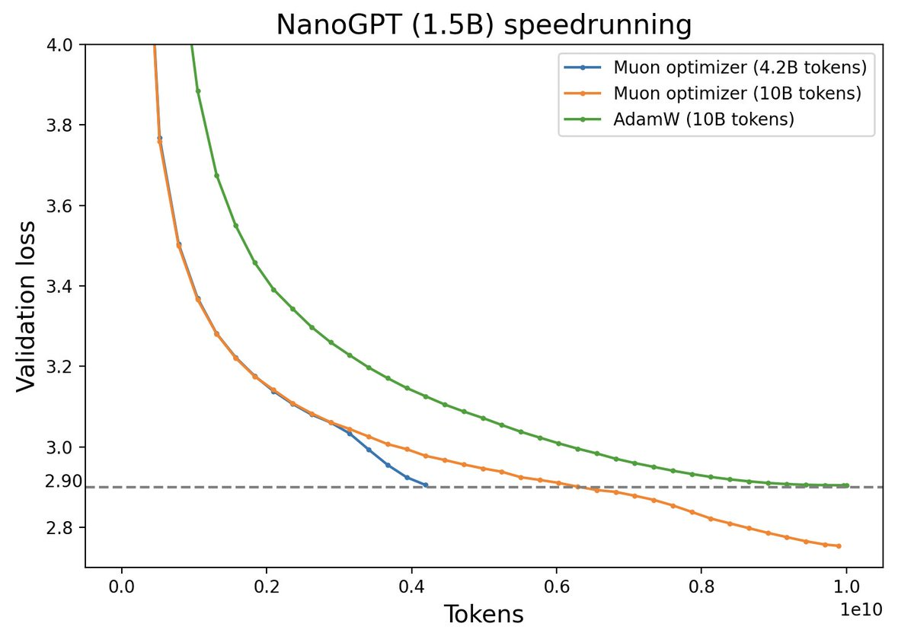
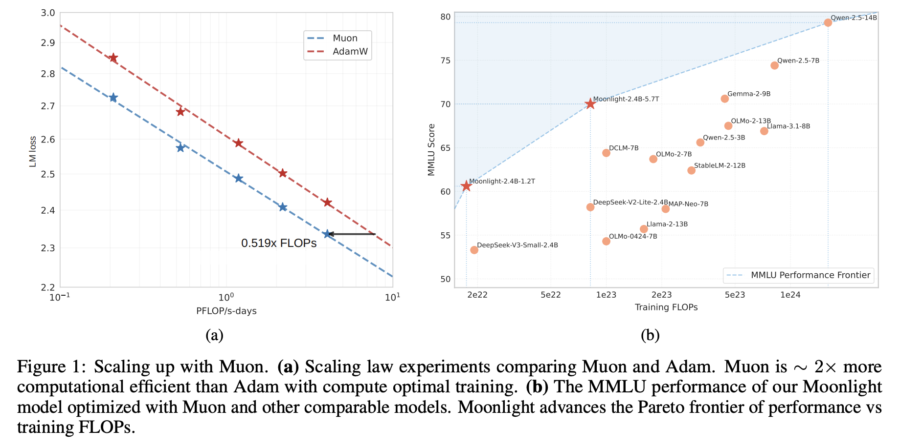
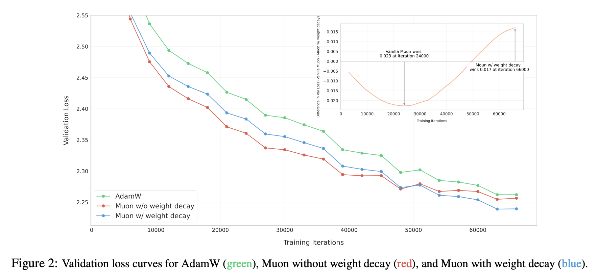
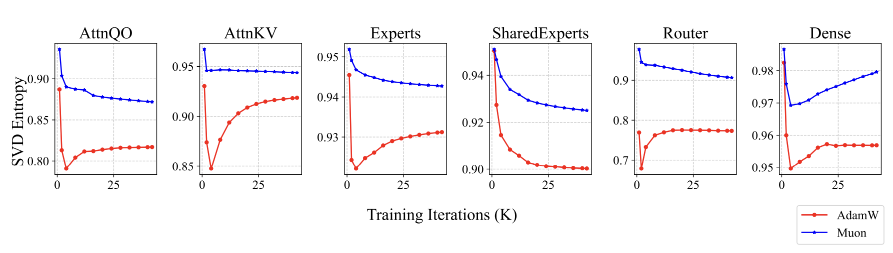

How should the learning rate change as batch size increase?
当batch size增大时，学习率该如何随之变化？ - 科学空间|Scientific Spaces (2024-11-14)
With the rapid advancement of computing power, we often want to “trade compute for time” – that is, reduce the wallclock time of model training by parallel-scaling the FLOP/sec with more chips. Ideally, we hope that with \(n\) times the FLOP/sec, the time to achieve the same effect would be reduced to \(1/n\), keeping the total FLOP cost consistent. This hope seems reasonable and natural, but it’s actually non-trivial. Even if we don’t consider parallel bottlenecks like communication, when computing power exceeds a certain scale or when models are smaller than a certain size, we generally can only utilize further compute-scaling by scaling the batch size. However, does increasing batch size always reduce training time while maintaining performance?
This is the topic we’ll discuss: When batch size increases, how should various hyperparameters, especially the learning rate, be adjusted to maintain the original training effect and maximize training efficiency? We can also call this the scaling law between batch size and learning rate.
From the perspective of variance
Intuitively, when batch size increases, the gradient of each batch will be more accurate, so we can take bigger steps, meaning increasing the learning rate, to reach the goal faster and shorten training time. Most people can generally understand this point. The question is, how much should we increase the learning rate to be most appropriate?
Square root
The earliest answer to this question might be square root scaling, meaning \(n\times\) batch size should translate to \(\sqrt{n}\times\) learning rate. This comes from the 2014 paper One weird trick for parallelizing convolutional neural networks, with the derivation principle being to keep the variance of SGD increments constant. Specifically, we denote the gradient from randomly sampling one sample as \(\tilde{\boldsymbol{g}}\), with its mean and covariance denoted as \(\boldsymbol{g}\) and \(\boldsymbol{\Sigma}\) respectively, where \(\boldsymbol{g}\) is the gradient of all samples. When we increase the sampling number to \(B\), we have:
\[ \begin{equation}\tilde{\boldsymbol{g}}_B \triangleq \frac{1}{B}\sum_{i=1}^B \tilde{\boldsymbol{g}}^{(i)},\quad \mathbb{E}[\tilde{\boldsymbol{g}}_B] = \boldsymbol{g},\quad \mathbb{E}[(\tilde{\boldsymbol{g}}_B-\boldsymbol{g})(\tilde{\boldsymbol{g}}_B-\boldsymbol{g})^{\top}]=\frac{\boldsymbol{\Sigma}}{B}\end{equation} \]
That is, increasing the number of samples doesn’t change the mean, but the covariance shrinks to \(1/B\). For the SGD optimizer, the increment is \(-\eta \tilde{\boldsymbol{g}}_B\), and its covariance is proportional to \(\eta^2/B\). We believe that an appropriate amount of noise (neither too much nor too little) is necessary in the optimization process, so when batch size \(B\) changes, we adjust the learning rate \(\eta\) to keep the noise intensity, i.e., the covariance matrix of the increment, constant, which leads to:
\[ \begin{equation}\frac{\eta^2}{B} = \text{Constant}\quad\Rightarrow\quad \eta\propto \sqrt{B}\end{equation} \]
This gives us the square root scaling law between learning rate and batch size. Later, Train longer, generalize better: closing the generalization gap in large batch training of neural networks also endorsed this choice.
Linear scaling
Interestingly, linear scaling, i.e., \(\eta\propto B\), often performs better in practice. Even those who first proposed square root scaling in One weird trick for parallelizing convolutional neural networks pointed this out in their paper and stated they couldn’t provide a reasonable explanation for it.
In some sense, linear scaling better matches our intuitive understanding, especially as in Accurate, Large Minibatch SGD: Training ImageNet in 1 Hour. Indeed, if the gradient direction of \(n\) consecutive minibatches doesn’t change much, then if we batch those \(n\) minibatches into one batch, we would be dividing by \(\frac{1}{nB}\), yielding \(\approx \frac{1}{n} \sum_{i=1}^B g_i\). So to compensate for that, we should scale learnig rate by \(n\).
However, assuming that all \(g_i\) should point in roughly the same direction is clearly too strong. Relaxing this assumption requires connecting SGD with SDE (Stochastic Differential Equations), which was accomplished by Stochastic Modified Equations and Dynamics of Stochastic Gradient Algorithms I: Mathematical Foundations, but the first paper to use this to analyze the relationship between learning rate and batch size should be On the Generalization Benefit of Noise in Stochastic Gradient Descent.
In hindsight, establishing this connection isn’t hard to understand. Let the model parameters be \(\boldsymbol{\theta}\), then the SGD update rule can be rewritten as:
\[ \begin{equation}\boldsymbol{\theta}_{t+1} =\boldsymbol{\theta}_t - \eta \tilde{\boldsymbol{g}}_{B,t} =\boldsymbol{\theta}_t - \eta \boldsymbol{g}_t - \eta (\tilde{\boldsymbol{g}}_{B,t} - \boldsymbol{g}_t)\end{equation} \]
where \(\tilde{\boldsymbol{g}}_{B,t} - \boldsymbol{g}_t\) is the noise in the gradient. Up to this point, we haven’t made any assumptions about the distribution of this noise, only knowing its mean is \(\boldsymbol{0}\) and its covariance is \(\boldsymbol{\Sigma}_t/B\). Next, we assume this noise follows a normal distribution \(\mathcal{N}(\boldsymbol{0},\boldsymbol{\Sigma}_t/B)\), then the above iteration can be further rewritten as:
\[ \begin{equation}\begin{aligned} \boldsymbol{\theta}_{t+1} =&\, \boldsymbol{\theta}_t - \eta \boldsymbol{g}_t - \eta (\tilde{\boldsymbol{g}}_{B,t} - \boldsymbol{g}_t) \\ =&\, \boldsymbol{\theta}_t - \eta \boldsymbol{g}_t - \eta \sqrt{\frac{\boldsymbol{\Sigma}_t}{B}}\boldsymbol{z},\quad \boldsymbol{z}\sim \mathcal{N}(\boldsymbol{0},\boldsymbol{I}) \\ =&\, \boldsymbol{\theta}_t - \eta \boldsymbol{g}_t - \sqrt{\eta} \sqrt{\frac{\eta\boldsymbol{\Sigma}_t}{B}}\boldsymbol{z},\quad \boldsymbol{z}\sim \mathcal{N}(\boldsymbol{0},\boldsymbol{I}) \end{aligned}\end{equation} \]
This means the SGD iteration format \(\boldsymbol{\theta}_{t+1} =\boldsymbol{\theta}_t - \eta \tilde{\boldsymbol{g}}_{B,t}\) is actually approximating the solution to the SDE:
\[ \begin{equation}d\boldsymbol{\theta} = - \boldsymbol{g}_t dt - \sqrt{\frac{\eta\boldsymbol{\Sigma}_t}{B}}d\boldsymbol{w}\end{equation} \]
Therefore, to ensure the running results don’t change significantly when \(B\) changes, the form of the above SDE should remain unchanged, which gives us linear scaling \(\eta\propto B\). The most crucial step in this process is that the step size of the noise term in SDE is the square root of the non-noise term, thus separating out a term \(\sqrt{\eta}\). We’ve also commented on this in A Casual Discussion of Generative Diffusion Models (Part 5): General Framework SDE Chapter. Simply put, zero-mean Gaussian noise has a certain cancellation effect over the long term, so the step size must be increased to manifest the noise effect.
The above conclusions are all based on the SGD optimizer. The paper On the SDEs and Scaling Rules for Adaptive Gradient Algorithms extended it to optimizers like RMSprop and Adam, resulting in square root scaling. Similarly, the slightly earlier Large Batch Optimization for Deep Learning: Training BERT in 76 minutes also applied square root scaling when testing Adam and its variant LAMB. More content can be found in the blogpost How to Scale Hyperparameters as Batch Size Increases.
Facing losses head on
It’s certain that whether it’s square root scaling or linear scaling, they can only hold approximately within a local range, because they both include the conclusion that, as long as the batch size is large enough, the learning rate can be arbitrarily large. That is obviously impossible. Additionally, the previous two sections focused on variance, but our fundamental task is to reduce the loss function, so we should start with the loss function.
Monotonic convergence
A classic work from this perspective is OpenAI’s An Empirical Model of Large-Batch Training, which analyzes the optimal learning rate for SGD through a second-order approximation of the loss function, concluding that the learning rate increases monotonically with batch size, but has an upper bound. The same approach also appeared in the slightly earlier Dissecting Adam: The Sign, Magnitude and Variance of Stochastic Gradients, though that paper wasn’t used to analyze the role of batch size.
The key to the entire derivation is to view the learning rate as an optimization parameter: Let the loss function be \(\mathcal{L}(\boldsymbol{\theta})\), the current batch’s gradient be \(\tilde{\boldsymbol{g}}_B\), then the loss function after SGD is \(\mathcal{L}(\boldsymbol{\theta} - \eta\tilde{\boldsymbol{g}}_B)\). We view the solution of the optimal learning rate as an optimization problem:
\[ \begin{equation}\eta^* = \mathop{\text{argmin}}_{\eta} \mathbb{E}[\mathcal{L}(\boldsymbol{\theta} - \eta\tilde{\boldsymbol{g}}_B)]\end{equation} \]
This objective is obviously intuitive – choose the learning rate to make the training efficiency the highest (the loss function decreases the fastest) on average. To solve this problem, we approximately expand the loss function to the second order:
\[ \begin{equation}\mathcal{L}(\boldsymbol{\theta} - \eta\tilde{\boldsymbol{g}}_B) \approx \mathcal{L}(\boldsymbol{\theta}) - \eta\tilde{\boldsymbol{g}}_B^{\top}\underbrace{\frac{\partial \mathcal{L}(\boldsymbol{\theta})}{\partial\boldsymbol{\theta}}}_{= \boldsymbol{g}} + \frac{1}{2}\eta^2 \tilde{\boldsymbol{g}}_B^{\top}\underbrace{\frac{\partial^2 \mathcal{L}(\boldsymbol{\theta})}{\partial\boldsymbol{\theta}^2}}_{\triangleq \boldsymbol{H}}\tilde{\boldsymbol{g}}_B = \mathcal{L}(\boldsymbol{\theta}) - \eta\tilde{\boldsymbol{g}}_B^{\top}\boldsymbol{g} + \frac{1}{2}\eta^2 \tilde{\boldsymbol{g}}_B^{\top}\boldsymbol{H}\tilde{\boldsymbol{g}}_B\end{equation} \]
Here, \(\boldsymbol{H}\) is the Hessian matrix, and \(\frac{\partial \mathcal{L}(\boldsymbol{\theta})}{\partial\boldsymbol{\theta}}\) is the gradient of the loss function. The ideal objective function \(\mathcal L\) is the loss averaged over all samples, which is why its gradient \(\boldsymbol{g}\) is the average of \(\tilde{\boldsymbol{g}}_B\). Taking the expectation, we get:
\[ \begin{equation}\mathbb{E}[\mathcal{L}(\boldsymbol{\theta} - \eta\tilde{\boldsymbol{g}}_B)] \approx \mathbb{E}[\mathcal{L}(\boldsymbol{\theta}) - \eta\tilde{\boldsymbol{g}}_B^{\top}\boldsymbol{g} + \frac{1}{2}\eta^2 \tilde{\boldsymbol{g}}_B^{\top}\boldsymbol{H}\tilde{\boldsymbol{g}}_B] = \mathcal{L}(\boldsymbol{\theta}) - \eta\boldsymbol{g}^{\top}\boldsymbol{g} + \frac{1}{2}\eta^2 \mathbb{E}[\tilde{\boldsymbol{g}}_B^{\top}\boldsymbol{H}\tilde{\boldsymbol{g}}_B]\end{equation} \]
The last term involves tricks with the cyclic property of trace:
\[ \begin{equation}\begin{aligned} \mathbb{E}[\tilde{\boldsymbol{g}}_B^{\top}\boldsymbol{H}\tilde{\boldsymbol{g}}_B] =&\, \mathbb{E}[\text{Tr}(\tilde{\boldsymbol{g}}_B^{\top}\boldsymbol{H}\tilde{\boldsymbol{g}}_B)]= \mathbb{E}[\text{Tr}(\tilde{\boldsymbol{g}}_B\tilde{\boldsymbol{g}}_B^{\top}\boldsymbol{H})] = \text{Tr}(\mathbb{E}[\tilde{\boldsymbol{g}}_B\tilde{\boldsymbol{g}}_B^{\top}]\boldsymbol{H})\\ =&\, \text{Tr}((\boldsymbol{g}\boldsymbol{g}^{\top} + \boldsymbol{\Sigma}/B)\boldsymbol{H}) = \boldsymbol{g}^{\top}\boldsymbol{H}\boldsymbol{g} + \text{Tr}(\boldsymbol{\Sigma}\boldsymbol{H})/B \end{aligned}\end{equation} \]
Now, assuming \(\boldsymbol{H}\) is positive definite (i.e. the loss function looks like a bowl), the problem becomes finding the minimum of a quadratic function:
\[ \begin{equation}\eta^* \approx \frac{\boldsymbol{g}^{\top}\boldsymbol{g}}{\boldsymbol{g}^{\top}\boldsymbol{H}\boldsymbol{g} + \text{Tr}(\boldsymbol{\Sigma}\boldsymbol{H})/B} = \frac{\eta_{\max}}{1 + \mathcal{B}_{\text{noise}}/B}\end{equation} \tag{1}\]
We can state this as “the learning rate increases monotonically with \(B\) but has an upper bound”, where:
\[ \begin{equation}\eta_{\max} = \frac{\boldsymbol{g}^{\top}\boldsymbol{g}}{\boldsymbol{g}^{\top}\boldsymbol{H}\boldsymbol{g}},\qquad\mathcal{B}_{\text{noise}} = \frac{\text{Tr}(\boldsymbol{\Sigma}\boldsymbol{H})}{\boldsymbol{g}^{\top}\boldsymbol{H}\boldsymbol{g}}\end{equation} \]
Empirical analysis
When \(B \ll \mathcal{B}_{\text{noise}}\), \(1 + \mathcal{B}_{\text{noise}}/B\approx \mathcal{B}_{\text{noise}}/B\), so \(\eta^* \approx \eta_{\max}B/\mathcal{B}_{\text{noise}}\propto B\), i.e., linear scaling, which again shows that linear scaling is only a local approximation for small batch sizes. When \(B > \mathcal{B}_{\text{noise}}\), \(\eta^*\) gradually approaches the saturation value \(\eta_{\max}\), meaning the increase in training cost far outweighs the improvement in training efficiency. Therefore, \(\mathcal{B}_{\text{noise}}\) serves as a watershed – once the batch size exceeds this value, there’s no need to continue investing computing power to increase the batch size.
For practitioners, the most crucial question is undoubtedly how to estimate \(\eta_{\max}\) and \(\mathcal{B}_{\text{noise}}\), especially since \(\mathcal{B}_{\text{noise}}\) directly affects the scaling law of learning rates and the saturation of training efficiency. Direct calculation of both involves the Hessian matrix \(\boldsymbol{H}\), whose computational cost is proportional to the square of the parameter count. In today’s world, where models with hundreds of millions of parameters are considered small, computing the Hessian matrix is clearly impractical, so more effective calculation methods must be sought.
Let’s first look at \(\mathcal{B}_{\text{noise}}\). Its expression is \(\frac{\text{Tr}(\boldsymbol{\Sigma}\boldsymbol{H})}{\boldsymbol{g}^{\top}\boldsymbol{H}\boldsymbol{g}}\), with an \(\boldsymbol{H}\) in both numerator and denominator, which undoubtedly tempts us to “cancel them out”. In fact, the simplification approach is similar – assuming \(\boldsymbol{H}\) approximates some multiple of the identity matrix, we get:
\[ \begin{equation}\mathcal{B}_{\text{noise}} = \frac{\text{Tr}(\boldsymbol{\Sigma}\boldsymbol{H})}{\boldsymbol{g}^{\top}\boldsymbol{H}\boldsymbol{g}}\approx \frac{\text{Tr}(\boldsymbol{\Sigma})}{\boldsymbol{g}^{\top}\boldsymbol{g}}\triangleq \mathcal{B}_{\text{simple}}\end{equation} \]
\(\mathcal{B}_{\text{simple}}\) is more computationally feasible, and experiments have found it’s usually a good approximation of \(\mathcal{B}_{\text{noise}}\). Therefore, we choose to estimate \(\mathcal{B}_{\text{simple}}\) rather than \(\mathcal{B}_{\text{noise}}\). Note that \(\text{Tr}(\boldsymbol{\Sigma})\) only needs the elements on the diagonal, so there’s no need to compute the full covariance matrix – just calculate the variance for each gradient component separately and sum them up. In data-parallel scenarios, the gradient variances can be directly estimated using the gradients computed on each device.
It’s worth noting that the results in Equation 1 are actually dynamic, meaning theoretically, \(\eta_{\max}\), \(\mathcal{B}_{\text{noise}}\), and \(\mathcal{B}_{\text{simple}}\) are different at each training step. So if we want to derive a static pattern, we need to train for a period of time until the model’s training enters the “right track” for the calculated \(\mathcal{B}_{\text{simple}}\) to be reliable. Alternatively, we can continuously monitor \(\mathcal{B}_{\text{simple}}\) during training to judge the gap between the current settings and the optimal ones.
As for \(\eta_{\max}\), there’s no need to estimate it according to the formula. We can directly perform a grid search for the learning rate under a small batch size to find an approximate \(\eta^*\), and then use the estimated \(\mathcal{B}_{\text{simple}}\) to deduce \(\eta_{\max}\).
Sample efficiency
Starting from the above results, we can also derive an asymptotic relationship between the amount of training data and the number of training steps. The derivation is simple: substituting Equation 1 into the loss function, we can calculate that the reduction in the loss function brought by each iteration at the optimal learning rate is:
\[ \begin{equation}\Delta\mathcal{L} = \mathcal{L}(\boldsymbol{\theta}) - \mathbb{E}[\mathcal{L}(\boldsymbol{\theta} - \eta^*\tilde{\boldsymbol{g}}_B)] \approx \frac{\Delta\mathcal{L}_{\max}}{1 + \mathcal{B}_{\text{noise}}/B}\end{equation} \tag{2}\]
where \(\Delta\mathcal{L}_{\max} = \frac{(\boldsymbol{g}^{\top}\boldsymbol{g})^2}{2\boldsymbol{g}^{\top}\boldsymbol{H}\boldsymbol{g}}\). The focus now is on interpreting this result.
When \(B\to\infty\), i.e., full-batch SGD, the reduction in the loss function at each step reaches the maximum \(\Delta\mathcal{L}_{\max}\), allowing us to reach the target point with the minimum number of training steps (denoted as \(S_{\min}\)). When \(B\) is finite, the average reduction in the loss function at each step is only \(\Delta\mathcal{L}\), meaning we need \(1 + \mathcal{B}_{\text{noise}}/B\) steps to achieve the same reduction as a single step of full-batch SGD. So the total number of training steps is roughly \(S = (1 + \mathcal{B}_{\text{noise}}/B)S_{\min}\).
Since the batch size is \(B\), the total number of samples consumed in the training process is \(E = BS = (B + \mathcal{B}_{\text{noise}})S_{\min}\), which is an increasing function of \(B\). When \(B\to 0\), \(E_{\min} = \mathcal{B}_{\text{noise}}S_{\min}\), indicating that as long as we use a sufficiently small batch size to train the model, the total number of training samples E will also decrease accordingly, at the cost of a very large number of training steps \(S\). Furthermore, using these notations, we can write the relationship between them as:
\[ \begin{equation}\left(\frac{S}{S_{\min}} - 1\right)\left(\frac{E}{E_{\min}} - 1\right) = 1\end{equation} \tag{3}\]
This is the scaling law between the amount of training data and the number of training steps, indicating that with less data, we should reduce the batch size and increase the number of training steps to have a better chance of reaching a more optimal solution. The derivation here has been simplified by me, assuming the invariance of \(\mathcal{B}_{\text{noise}}\) and \(\Delta\mathcal{L}_{\max}\) throughout the training process. If necessary, the dynamic changes can be handled more precisely using integration as in the original paper’s appendix (but requires introducing the assumption \(B = \sqrt{r\mathcal{B}_{\text{noise}}}\)), which we won’t expand on here.
Additionally, since \(\mathcal{B}_{\text{noise}} = E_{\min}/S_{\min}\), the above equation also provides another approach to estimate \(\mathcal{B}_{\text{noise}}\): obtain multiple (S,E) pairs through multiple experiments and grid searches, then fit the above equation to estimate \(E_{\min}\) and \(S_{\min}\), and subsequently calculate \(\mathcal{B}_{\text{noise}}\).
With adaptive learning rates
It must be said that OpenAI, as one of the pioneers of various Scaling Laws, deserves its reputation. The aforementioned analysis is quite brilliant, and the results are quite rich. What’s even more remarkable is that the entire derivation process is not complicated, giving a sense of elegant necessity. However, the work we have just worked through is all based on SGD, not applicable to adaptive learning rate optimizers like Adam was still unclear. That analysis was done by Surge Phenomenon in Optimal Learning Rate and Batch Size Scaling.
Symbolic approximation
Adam is analyzed similarly as SGD, by second-order expansion. The difference is that the direction vector changes from \(\tilde{\boldsymbol{g}}_B\) to a general vector \(\tilde{\boldsymbol{u}}_B\). In this case, we have:
\[ \begin{equation}\mathbb{E}[\mathcal{L}(\boldsymbol{\theta} - \eta\tilde{\boldsymbol{u}}_B)] \approx \mathcal{L}(\boldsymbol{\theta}) - \eta\mathbb{E}[\tilde{\boldsymbol{u}}_B]^{\top}\boldsymbol{g} + \frac{1}{2}\eta^2 \text{Tr}(\mathbb{E}[\tilde{\boldsymbol{u}}_B\tilde{\boldsymbol{u}}_B^{\top}]\boldsymbol{H})\end{equation} \]
Now we need to determine \(\tilde{\boldsymbol{u}}_B\) and calculate the corresponding \(\mathbb{E}[\tilde{\boldsymbol{u}}_B]\) and \(\mathbb{E}[\tilde{\boldsymbol{u}}_B\tilde{\boldsymbol{u}}_B^{\top}]\). Since we only need an asymptotic relationship, just like in Configuring Different Learning Rates, Can LoRA Rise a Bit More?, we choose SignSGD, i.e., \(\tilde{\boldsymbol{u}}_B = \text{sign}(\tilde{\boldsymbol{g}}_B)\), as an approximation for Adam. The earliest source of this approach might be Dissecting Adam: The Sign, Magnitude and Variance of Stochastic Gradients. The reasonableness of this approximation is reflected in two points:
- Regardless of the values of \(\beta_1\) and \(\beta_2\), the update vector for Adam’s first step is always \(\text{sign}(\tilde{\boldsymbol{g}}_B)\);
- When \(\beta_1=\beta_2=0\), Adam’s update vector is always \(\text{sign}(\tilde{\boldsymbol{g}}_B)\).
To calculate \(\mathbb{E}[\tilde{\boldsymbol{u}}_B]\) and \(\mathbb{E}[\tilde{\boldsymbol{u}}_B\tilde{\boldsymbol{u}}_B^{\top}]\), we also need to assume, as in the Linear scaling section, that \(\tilde{\boldsymbol{g}}_B\) follows the distribution \(\mathcal{N}(\boldsymbol{g},\boldsymbol{\Sigma}/B)\). To simplify the calculation, we further assume that \(\boldsymbol{\Sigma}\) is a diagonal matrix \(\text{diag}(\sigma_1^2,\sigma_2^2,\sigma_3^2,\cdots)\), meaning that the components are independent of each other, allowing us to process each component independently. By reparameterization, \(\tilde{g}_B\sim \mathcal{N}(g, \sigma^2/B)\) is equivalent to \(\tilde{g}_B=g + \sigma z/\sqrt{B},z\sim\mathcal{N}(0,1)\), therefore:
\[ \begin{equation}\begin{aligned} \mathbb{E}[\tilde{u}_B] =&\, \mathbb{E}[\text{sign}(g + \sigma z/\sqrt{B})] = \mathbb{E}[\text{sign}(g\sqrt{B}/\sigma + z)] \\ =&\,\frac{1}{\sqrt{2\pi}}\int_{-\infty}^{\infty} \text{sign}(g\sqrt{B}/\sigma + z) e^{-z^2/2}dz \\ =&\,\frac{1}{\sqrt{2\pi}}\int_{-\infty}^{-g\sqrt{B}/\sigma} (-1)\times e^{-z^2/2}dz + \frac{1}{\sqrt{2\pi}}\int_{-g\sqrt{B}/\sigma}^{\infty} 1\times e^{-z^2/2}dz \\ =&\,\text{erf}\left(\frac{g}{\sigma}\sqrt{\frac{B}{2}}\right) \end{aligned}\end{equation} \]
Here, \(\text{erf}\) is the error function, which is an S-shaped function with a range of \((-1,1)\) similar to \(\tanh\), and can serve as a smooth approximation of \(\text{sign}\). But since \(\text{erf}\) itself doesn’t have an elementary function expression, it’s better to find an elementary function approximation to more intuitively observe the pattern of change. We’ve discussed this topic before in How the Two Elementary Function Approximations of GELU Came About, but the approximations there are still too complex (involving exponential operations). Here we’ll use something simpler:
\[ \begin{equation}\text{erf}(x)\approx \text{sign}(x) = \frac{x}{|x|} = \frac{x}{\sqrt{x^2}}\approx \frac{x}{\sqrt{x^2+c}}\end{equation} \]
We choose \(c=\pi/4\) so that the first-order approximation of this approximation at \(x=0\) equals the first-order approximation of \(\text{erf}\). Of course, after making so many approximations, the value of \(c\) is not very important; we just need to know that such a \(c > 0\) exists. Based on this approximation, we get:
\[ \begin{equation}\mathbb{E}[\tilde{u}_B] \approx \frac{g/\sigma}{\sqrt{\pi/2B+(g/\sigma)^2}}\quad\Rightarrow\quad\mathbb{E}[\tilde{\boldsymbol{u}}_B]_i \approx \frac{g_i/\sigma_i}{\sqrt{\pi/2B+(g_i/\sigma_i)^2}}\triangleq \mu_i\end{equation} \]
We can find that one obvious difference between Adam and SGD is that \(\mathbb{E}[\tilde{\boldsymbol{u}}_B]\) is already related to \(B\) at this step. However, the second moment is simpler now, because the square of \(\text{sign}(x)\) is always 1, so:
\[ \begin{equation}\mathbb{E}[\tilde{u}_B^2] = 1\quad\Rightarrow\quad\mathbb{E}[\tilde{\boldsymbol{u}}_B\tilde{\boldsymbol{u}}_B^{\top}]_{i,j} \to\left\{\begin{aligned}&=1, & i = j \\ &\approx\mu_i \mu_j,&\,i\neq j\end{aligned}\right.\end{equation} \]
Using these results, we can obtain:
\[ \eta^* \approx \frac{\mathbb{E}[\tilde{\boldsymbol{u}}_B]^{\top}\boldsymbol{g}}{\text{Tr}(\mathbb{E}[\tilde{\boldsymbol{u}}_B\tilde{\boldsymbol{u}}_B^{\top}]\boldsymbol{H})} \approx \frac{\sum_i \mu_i g_i}{\sum_i H_{i,i} + \sum_{i\neq j} \mu_i \mu_j H_{i,j}} \tag{4}\]
\[ \Delta \mathcal{L} = \mathcal{L}(\boldsymbol{\theta}) - \mathbb{E}[\mathcal{L}(\boldsymbol{\theta} - \eta^*\tilde{\boldsymbol{u}}_B)] \approx \frac{1}{2}\frac{(\sum_i \mu_i g_i)^2}{\sum_i H_{i,i} + \sum_{i\neq j} \mu_i \mu_j H_{i,j}} \tag{5}\]
Two special cases
Compared to SGD’s Equation 1, Adam’s Equation 4 is more complex, making it difficult to intuitively see its dependency pattern on \(B\). So we’ll start with a few special examples.
First, consider \(B\to\infty\). In this case, \(\mu_i = \text{sign}(g_i)\), so:
\[ \begin{equation}\eta^* \approx \frac{\sum_i |g_i|}{\sum_i H_{i,i} + \sum_{i\neq j} \text{sign}(g_i g_j) H_{i,j}}\end{equation} \]
The difference between this and SGD’s \(\eta_{\max}\) is that it is not homogeneous with respect to the gradient, but proportional to the gradient’s scale.
Next, let’s consider the example where \(\boldsymbol{H}\) is a diagonal matrix, i.e., \(H_{i,j}=0\) when \(i\neq j\). In this case:
\[ \begin{equation}\eta^* \approx \frac{\sum_i \mu_i g_i}{\sum_i H_{i,i}}=\frac{1}{\sum_i H_{i,i}}\sum_i \frac{g_i^2/\sigma_i}{\sqrt{\pi/2B+(g_i/\sigma_i)^2}}\end{equation} \]
Each term in the sum is monotonically increasing with an upper bound with respect to \(B\), so the total result is also like this. To capture the most essential pattern, we can consider further simplifying \(\mu_i\) (this is where it starts to differ from the original paper):
\[ \begin{equation}\mu_i = \frac{g_i/\sigma_i}{\sqrt{\pi/2B+(g_i/\sigma_i)^2}} = \frac{\text{sign}(g_i)}{\sqrt{1 + \pi(\sigma_i/g_i)^2/2B}} \approx \frac{\text{sign}(g_i)}{\sqrt{1 + \pi\kappa^2/2B}}\end{equation} \tag{6}\]
The assumption here is that there exists a constant \(\kappa^2\) independent of \(i\) [for example, we can consider taking some kind of average of all \((\sigma_i/g_i)^2\); actually, this \(\kappa^2\) is similar to the \(\mathcal{B}_{\text{simple}}\) mentioned earlier, and it can also be estimated according to the definition of \(\mathcal{B}_{\text{simple}}\)], such that replacing \((\sigma_i/g_i)^2\) with \(\kappa^2\) is a good approximation for any \(i\). Thus:
\[ \begin{equation}\eta^* \approx \frac{\sum_i \mu_i g_i}{\sum_i H_{i,i}}\approx \frac{\sum_i |g_i|}{\sum_i H_{i,i}}\frac{1}{\sqrt{1 + \pi\kappa^2/2B}}\end{equation} \tag{7}\]
When \(\pi\kappa^2\gg 2B\), i.e., \(B \ll \pi\kappa^2/2\), we can further write the approximation:
\[ \begin{equation}\eta^* \approx \frac{\sum_i \sigma_i}{\kappa\sum_i H_{i,i}}\sqrt{\frac{2B}{\pi}} \propto \sqrt{B}\end{equation} \]
This indicates that when the batch size itself is relatively small, Adam indeed applies to the square root scaling law.
Surge phenomenon
If we apply the approximation Equation 6 to the original Equation 4, we’ll find it exhibits some entirely new characteristics. Specifically, we have:
\[ \begin{equation}\eta^* \approx \frac{\sum_i \mu_i g_i}{\sum_i H_{i,i} + \sum_{i\neq j} \mu_i \mu_j H_{i,j}} \approx \frac{\eta_{\max}}{\frac{1}{2}\left(\frac{\beta_{\text{noise}}}{\beta} + \frac{\beta}{\beta_{\text{noise}}}\right)}\end{equation} \tag{8}\]
where \(\beta = (1 + \pi\kappa^2/2B)^{-1/2}\), and:
\[ \begin{equation}\beta_{\text{noise}} = \sqrt{\frac{\sum_i H_{i,i}}{\sum_{i\neq j}\text{sign}(g_i g_j) H_{i,j}}},\quad \eta_{\max} = \frac{\sum_i |g_i|}{2\sqrt{\left(\sum_i H_{i,i}\right)\left(\sum_{i\neq j} \text{sign}(g_i g_j) H_{i,j}\right)}}\end{equation} \]
Note that \(\beta\) is a monotonically increasing function of \(B\), but the final approximation in Equation 8 is not a monotonically increasing function of \(\beta\). Instead, it first increases and then decreases, reaching its maximum value at \(\beta=\beta_{\text{noise}}\). This implies that there exists a corresponding \(\mathcal{B}_{\text{noise}}\) such that when the batch size exceeds this \(\mathcal{B}_{\text{noise}}\), the optimal learning rate should not increase but rather decrease! This is the “surge phenomenon” mentioned in the title of the original paper. (Of course, there’s a limitation here: \(\beta\) is always less than \(1\). If \(\beta_{\text{noise}} \geq 1\), then the relationship between the optimal learning rate and batch size remains monotonically increasing.)
Regarding Adam’s \(\eta^*\), OpenAI actually made an unproven conjecture in their paper’s appendix that Adam’s optimal learning rate should be:
\[ \begin{equation}\eta^* \approx \frac{\eta_{\max}}{(1 + \mathcal{B}_{\text{noise}}/B)^{\alpha}}\end{equation} \tag{9}\]
where \(0.5 < \alpha < 1\). It now appears that this form is only an approximate result when the diagonal elements of the Hessian matrix dominate. When the effect of non-diagonal elements cannot be ignored, the “surge phenomenon” may occur, that is, the learning rate should actually decrease when the batch size is large enough.
How can we intuitively understand the surge phenomenon? I believe it essentially reflects the suboptimality of adaptive learning rate strategies. Still taking the approximation \(\tilde{\boldsymbol{u}}_B = \text{sign}(\tilde{\boldsymbol{g}}_B)\) as an example, the larger \(B\) is, the more accurate \(\tilde{\boldsymbol{g}}_B\) becomes. As \(B\to \infty\), we get \(\text{sign}(\boldsymbol{g})\), but is \(\text{sign}(\boldsymbol{g})\) the most scientific update direction? Not necessarily, especially in the later stages of training where such adaptive strategies might even have negative effects. Therefore, when \(B\) takes an appropriate value, the noise in \(\text{sign}(\tilde{\boldsymbol{g}}_B)\) might actually correct this suboptimality. As \(B\) continues to increase, the noise decreases, reducing the opportunity for correction, thus requiring more caution by lowering the learning rate.
Efficiency relation
Similar to the SGD analysis, we can also consider \(\Delta\mathcal{L}\) by substituting Equation 8 into Equation 5, restoring the notation \(B\) and then simplifying (the simplification process doesn’t require any approximations) to get:
\[ \begin{equation}\Delta \mathcal{L} \approx \frac{\Delta \mathcal{L}_{\max}}{1 + \mathcal{B}_{\text{noise-2}}/B}\end{equation} \tag{10}\]
where:
\[ \begin{equation}\Delta \mathcal{L}_{\max} = \frac{\beta_{\text{noise}}\eta_{\max}\sum_i|g_i|}{1 + \beta_{\text{noise}}^2},\quad \mathcal{B}_{\text{noise-2}} = \frac{\pi\kappa^2\beta_{\text{noise}}^2}{2(1 + \beta_{\text{noise}}^2)}\end{equation} \tag{11}\]
Note that \(\mathcal{B}_{\text{noise-2}}\) is a new notation; it’s not \(\mathcal{B}_{\text{noise}}\). The latter is derived by solving \(\beta=\beta_{\text{noise}}\) for the theoretical optimal batch size, which gives:
\[ \begin{equation}\mathcal{B}_{\text{noise}} = \frac{\pi\kappa^2\beta_{\text{noise}}^2}{2(1 - \beta_{\text{noise}}^2)}\end{equation} \]
The relationship between them is:
\[ \begin{equation}\frac{1}{\mathcal{B}_{\text{noise-2}}} - \frac{1}{\mathcal{B}_{\text{noise}}} = \frac{4}{\pi\kappa^2}\quad\Rightarrow\quad \mathcal{B}_{\text{noise}} = \left(\frac{1}{\mathcal{B}_{\text{noise-2}}} - \frac{4}{\pi\kappa^2}\right)^{-1}\end{equation} \tag{12}\]
Since Equation 10 is formally the same as SGD’s Equation 2, the analysis in that section applies here as well, and we can derive Equation 3:
\[ \begin{equation}\left(\frac{S}{S_{\min}} - 1\right)\left(\frac{E}{E_{\min}} - 1\right) = 1\end{equation} \]
Except now \(E_{\min}/S_{\min} = \mathcal{B}_{\text{noise-2}}\). This gives us a method to estimate \(\beta_{\text{noise}}\) and \(\mathcal{B}_{\text{noise}}\): conduct multiple experiments to obtain several \((S,E)\) pairs, simultaneously estimating \(\kappa^2\) during the experiments, then fit the above equation to get \(E_{\min},S_{\min}\), thereby estimating \(\mathcal{B}_{\text{noise-2}}\), and finally solve for \(\beta_{\text{noise}}\) using Equation 11.
If \(\beta_{\text{noise}} \geq 1\), there is no optimal \(\mathcal{B}_{\text{noise}}\). If \(\beta_{\text{noise}} \gg 1\), it indicates that the diagonal elements of the Hessian matrix dominate, in which case the scaling rule Equation 7 applies, and increasing the batch size can always appropriately increase the learning rate. When \(\beta_{\text{noise}} < 1\), the optimal \(\mathcal{B}_{\text{noise}}\) can be solved using Equation 12, and if the batch size exceeds this value, the learning rate should actually decrease.
One more thing
It’s worth noting that the starting point and final conclusions of the analysis in the above sections are actually quite similar to those in the original paper Surge Phenomenon in Optimal Learning Rate and Batch Size Scaling, although the approximation methods used in the intermediate process differ.
Most of the conclusions in the original paper are approximate results under the assumption that \(B \ll \pi(\sigma_i/g_i)^2/2\), which leads to the conclusion that the surge phenomenon almost always occurs. This is not very scientific. Most obviously, the form of the assumption \(B \ll \pi(\sigma_i/g_i)^2/2\) itself is somewhat problematic, as its right side depends on \(i\). We can’t assign a separate batch size to each component, so to obtain a global result, we would need \(B \ll \min_i \pi(\sigma_i/g_i)^2/2\), which is rather stringent.
The approach in this article introduces the approximation Equation 6, which can be seen as a mean-field approximation. Intuitively, it is more reasonable than the point-by-point assumption \(B \ll \pi(\sigma_i/g_i)^2/2\), so in principle, the conclusions should be more precise. For example, we can conclude that “even if the non-diagonal elements of the Hessian matrix cannot be ignored, the surge phenomenon may not necessarily occur” (depending on \(\beta_{\text{noise}}\)). Importantly, this precision does not sacrifice simplicity. For instance, Equation 8 is equally clear and concise, Equation 10 has the same form as in the original paper, and no additional approximation assumptions are needed, and so on.
Finally, a small reflection: OpenAI’s analysis of SGD was actually done in 2018, while the surge phenomenon paper was only published in the middle of this year. It took 6 years to move from SGD to Adam, which is quite surprising. It seems that OpenAI’s prestige and their conjecture Equation 9 led people to believe that there wasn’t much more to do with Adam, not expecting that Adam might have some new properties. Of course, the question of how reasonable \(\tilde{\boldsymbol{u}}_B = \text{sign}(\tilde{\boldsymbol{g}}_B)\) is as an approximation of Adam and to what extent it represents the actual situation is still worth further consideration.
Adaptive learning rate optimizers from a Hessian approximation point of view
Source: 从Hessian近似看自适应学习率优化器 - 科学空间|Scientific Spaces (2024-11-29)
These days I’ve been revisiting Meta’s paper from last year A Theory on Adam Instability in Large-Scale Machine Learning, which presents a new perspective on adaptive learning rate optimizers like Adam: it points out that the moving average of squared gradients approximates the square of the Hessian matrix to some extent, making Adam, RMSprop and other optimizers actually approximate second-order Newton methods.
This perspective is quite novel and appears to differ significantly from previous Hessian approximations, making it worth studying and thinking about.
Newton’s method
Let the loss function be \(\mathcal{L}(\boldsymbol{\theta})\), where the parameter to be optimized is \(\boldsymbol{\theta}\), and our optimization goal is
\[ \begin{equation}\boldsymbol{\theta}^* = \mathop{\text{argmin}}_{\boldsymbol{\theta}} \mathcal{L}(\boldsymbol{\theta})\end{equation} \tag{13}\]
Assuming the current value of \(\boldsymbol{\theta}\) is \(\boldsymbol{\theta}_t\), Newton’s method seeks \(\boldsymbol{\theta}_{t+1}\) by expanding the loss function to the second order:
\[ \begin{equation}\mathcal{L}(\boldsymbol{\theta})\approx \mathcal{L}(\boldsymbol{\theta}_t) + \boldsymbol{g}_t^{\top}(\boldsymbol{\theta} - \boldsymbol{\theta}_t) + \frac{1}{2}(\boldsymbol{\theta} - \boldsymbol{\theta}_t)^{\top}\boldsymbol{\mathcal{H}}_t(\boldsymbol{\theta} - \boldsymbol{\theta}_t)\end{equation} \]
where \(\boldsymbol{g}_t = \nabla_{\boldsymbol{\theta}_t}\mathcal{L}(\boldsymbol{\theta}_t)\) is the gradient, and \(\boldsymbol{\mathcal{H}}_t=\nabla_{\boldsymbol{\theta}_t}^2\mathcal{L}(\boldsymbol{\theta}_t)\) is the Hessian matrix. Assuming the positive definiteness of the Hessian matrix, the right side of the above equation has a unique minimum \(\boldsymbol{\theta}_t - \boldsymbol{\mathcal{H}}_t^{-1}\boldsymbol{g}_t\), which Newton’s method uses as the next step \(\boldsymbol{\theta}_{t+1}\):
\[ \begin{equation}\boldsymbol{\theta}_{t+1} = \boldsymbol{\theta}_t-\boldsymbol{\mathcal{H}}_t^{-1}\boldsymbol{g}_t = \boldsymbol{\theta}_t - (\nabla_{\boldsymbol{\theta}_t}^2\mathcal{L})^{-1} \nabla_{\boldsymbol{\theta}_t}\mathcal{L}\end{equation} \]
Note that the above equation does not have an additional learning rate parameter, so Newton’s method already has an adaptive learning rate. Of course, since the complexity of the Hessian matrix is proportional to the square of the parameter count, the complete Newton’s method has basically only theoretical value in deep learning. To apply Newton’s method in practice, significant simplifying assumptions about the Hessian matrix are needed, such as assuming it’s diagonal or low-rank.
From the Newton’s method perspective, SGD assumes \(\boldsymbol{\mathcal{H}}_t=\eta_t^{-1}\boldsymbol{I}\), while Adam assumes \(\boldsymbol{\mathcal{H}}_t=\eta_t^{-1}\text{diag}(\sqrt{\hat{\boldsymbol{v}}_t} + \epsilon)\), where
\[ \begin{equation}\text{Adam}\triangleq \left\{\begin{aligned} &\boldsymbol{m}_t = \beta_1 \boldsymbol{m}_{t-1} + \left(1 - \beta_1\right) \boldsymbol{g}_t\\ &\boldsymbol{v}_t = \beta_2 \boldsymbol{v}_{t-1} + \left(1 - \beta_2\right) \boldsymbol{g}_t\odot\boldsymbol{g}_t\\ &\hat{\boldsymbol{m}}_t = \boldsymbol{m}_t\left/\left(1 - \beta_1^t\right)\right.\\ &\hat{\boldsymbol{v}}_t = \boldsymbol{v}_t\left/\left(1 - \beta_2^t\right)\right.\\ &\boldsymbol{\theta}_t = \boldsymbol{\theta}_{t-1} - \eta_t \hat{\boldsymbol{m}}_t\left/\left(\sqrt{\hat{\boldsymbol{v}}_t} + \epsilon\right)\right. \end{aligned}\right.\end{equation} \]
Next, we want to demonstrate that \(\eta_t^{-1}\text{diag}(\sqrt{\hat{\boldsymbol{v}}_t})\) is a better approximation of \(\boldsymbol{\mathcal{H}}_t\).
Gradient approximation
The key to the proof is using the first-order approximation of the gradient:
\[ \begin{equation}\boldsymbol{g}_{\boldsymbol{\theta}} \approx \boldsymbol{g}_{\boldsymbol{\theta}^*} + \boldsymbol{\mathcal{H}}_{\boldsymbol{\theta}^*}(\boldsymbol{\theta} - \boldsymbol{\theta}^*)\end{equation} \]
where \(\boldsymbol{g}_{\boldsymbol{\theta}^*}\) and \(\boldsymbol{\mathcal{H}}_{\boldsymbol{\theta}^*}\) indicate that we expand at \(\boldsymbol{\theta}=\boldsymbol{\theta}^*\). Here, \(\boldsymbol{\theta}^*\) is the target we are looking for Equation 13, at which point the model’s gradient is zero, so the above equation can be simplified to:
\[ \begin{equation}\boldsymbol{g}_{\boldsymbol{\theta}} \approx \boldsymbol{\mathcal{H}}_{\boldsymbol{\theta}^*}(\boldsymbol{\theta} - \boldsymbol{\theta}^*)\end{equation} \]
Thus:
\[ \begin{equation}\boldsymbol{g}_{\boldsymbol{\theta}}\boldsymbol{g}_{\boldsymbol{\theta}}^{\top} \approx \boldsymbol{\mathcal{H}}_{\boldsymbol{\theta}^*}(\boldsymbol{\theta} - \boldsymbol{\theta}^*)(\boldsymbol{\theta} - \boldsymbol{\theta}^*)^{\top}\boldsymbol{\mathcal{H}}_{\boldsymbol{\theta}^*}^{\top}\end{equation} \]
After training has entered the “grooves of convergence” like a train snapping to its rails, the model will be spiraling around \(\boldsymbol{\theta}^*\) for a long time, converging slowly. To some extent, we can view \(\boldsymbol{\theta} - \boldsymbol{\theta}^*\) as a random variable following a normal distribution \(\mathcal{N}(\boldsymbol{0},\sigma^2\boldsymbol{I})\). Then:
\[ \begin{equation}\mathbb{E}[\boldsymbol{g}_{\boldsymbol{\theta}}\boldsymbol{g}_{\boldsymbol{\theta}}^{\top}] \approx \boldsymbol{\mathcal{H}}_{\boldsymbol{\theta}^*}\mathbb{E}[(\boldsymbol{\theta} - \boldsymbol{\theta}^*)(\boldsymbol{\theta} - \boldsymbol{\theta}^*)^{\top}]\boldsymbol{\mathcal{H}}_{\boldsymbol{\theta}^*}^{\top} = \sigma^2\boldsymbol{\mathcal{H}}_{\boldsymbol{\theta}^*}\boldsymbol{\mathcal{H}}_{\boldsymbol{\theta}^*}^{\top}\end{equation} \tag{14}\]
Assuming the Hessian matrix is diagonal, we can keep only the diagonal elements of the above equation:
\[ \begin{equation}\text{diag}(\mathbb{E}[\boldsymbol{g}_{\boldsymbol{\theta}}\odot\boldsymbol{g}_{\boldsymbol{\theta}}]) \approx \sigma^2\boldsymbol{\mathcal{H}}_{\boldsymbol{\theta}^*}^2\quad\Rightarrow\quad \boldsymbol{\mathcal{H}}_{\boldsymbol{\theta}^*} = \frac{1}{\sigma}\text{diag}(\sqrt{\mathbb{E}[\boldsymbol{g}_{\boldsymbol{\theta}}\odot\boldsymbol{g}_{\boldsymbol{\theta}}]})\end{equation} \]
Doesn’t that look a bit similar? Adam’s \(\hat{\boldsymbol{v}}_t\) is a moving average of the squared gradient, which can be seen as an approximation of \(\mathbb{E}[\boldsymbol{g}_{\boldsymbol{\theta}}\odot\boldsymbol{g}_{\boldsymbol{\theta}}]\). Finally, if we assume that \(\boldsymbol{\mathcal{H}}_{\boldsymbol{\theta}_t} \approx \boldsymbol{\mathcal{H}}_{\boldsymbol{\theta}^*}\), we can conclude that \(\eta_t^{-1}\text{diag}(\sqrt{\hat{\boldsymbol{v}}_t})\) is an approximation of \(\boldsymbol{\mathcal{H}}_t\).
This can also explain why Adam’s \(\beta_2\) is usually greater than \(\beta_1\). To estimate the Hessian more accurately, the moving average of \(\hat{\boldsymbol{v}}_t\) should be as “long-term” as possible (close to uniform averaging), so \(\beta_2\) should be very close to 1. However, if the momentum \(\hat{\boldsymbol{m}}_t\), which is a moving average of gradients, averages over too long a period, the result will approach \(\boldsymbol{g}_{\boldsymbol{\theta}^*}=\boldsymbol{0}\), which is not good. Therefore, the moving average for momentum should be more localized.
More connections
In the previous derivation, we assumed that \(\boldsymbol{\theta}^*\) is the theoretical optimal point, so \(\boldsymbol{g} _{\boldsymbol{\theta}^*} = \boldsymbol{0}\). What if \(\boldsymbol{\theta}^*\) is any arbitrary point? Then Equation 14 would become:
\[ \begin{equation}\mathbb{E}[(\boldsymbol{g}_{\boldsymbol{\theta}}-\boldsymbol{g} _{\boldsymbol{\theta}^*})(\boldsymbol{g}_{\boldsymbol{\theta}}-\boldsymbol{g} _{\boldsymbol{\theta}^*})^{\top}] \approx \sigma^2\boldsymbol{\mathcal{H}}_{\boldsymbol{\theta}^*}\boldsymbol{\mathcal{H}}_{\boldsymbol{\theta}^*}^{\top}\end{equation} \]
This means that as long as we use a moving average of the covariance rather than the second moment, we can obtain a Hessian approximation within the local range. This corresponds exactly to the approach of the AdaBelief optimizer, where \(\boldsymbol{v}\) is a moving average of the square of the difference between \(\boldsymbol{g}\) and \(\boldsymbol{m}\):
\[ \begin{equation}\text{AdaBelief}\triangleq \left\{\begin{aligned} &\boldsymbol{m}_t = \beta_1 \boldsymbol{m}_{t-1} + \left(1 - \beta_1\right) \boldsymbol{g}_t\\ &\boldsymbol{v}_t = \beta_2 \boldsymbol{v}_{t-1} + \left(1 - \beta_2\right) (\boldsymbol{g}_t - \boldsymbol{m}_t)\odot(\boldsymbol{g}_t - \boldsymbol{m}_t)\\ &\hat{\boldsymbol{m}}_t = \boldsymbol{m}_t\left/\left(1 - \beta_1^t\right)\right.\\ &\hat{\boldsymbol{v}}_t = \boldsymbol{v}_t\left/\left(1 - \beta_2^t\right)\right.\\ &\boldsymbol{\theta}_t = \boldsymbol{\theta}_{t-1} - \eta_t \hat{\boldsymbol{m}}_t\left/\left(\sqrt{\hat{\boldsymbol{v}}_t} + \epsilon\right)\right. \end{aligned}\right.\end{equation} \]
Muon appreciation: a fundamental advance from vectors to matrices
Source: Muon优化器赏析：从向量到矩阵的本质跨越 - 科学空间|Scientific Spaces (2024-12-10)
Since the advent of the LLM era, the academic community’s enthusiasm for optimizer research seems to have diminished. This is mainly because the current mainstream AdamW can already meet most needs, and any major “surgery” to optimizers would cost enormously to validate. Therefore, current optimizer variations are mostly small patches applied to AdamW by people in the industry based on their practical training experience.
However, recently “Muon” has generated quite a buzz on Twitter. It claims to be more efficient than AdamW, and is not just a minor tweak to Adam, but rather embodies some principles regarding the differences between vectors and matrices that are worth pondering. Let’s appreciate it together in this article.

First taste
\begin{algorithm}
\caption{Muon}
\begin{algorithmic}
\REQUIRE Learning rate $\eta$, momentum $\mu$
\STATE Initialize $B_0 \leftarrow 0$
\FOR{$t=1, \ldots$}
\STATE Compute gradient $G_t \leftarrow \nabla_{\theta}\mathcal{L}_t(\theta_{t-1})$
\STATE $B_t \leftarrow \mu B_{t-1} + G_t$
\STATE $O_t \leftarrow \text{NewtonSchulz5}(B_t)$
\STATE Update parameters $\theta_t \leftarrow \theta_{t-1} - \eta O_t$
\ENDFOR
\RETURN $\theta_t$
\end{algorithmic}
\end{algorithm}Muon stands for “Momentum Orthogonalized by Newton–Schulz”. Unlike typical gradient descent, which applies to any kind of parameter, whether it be scalar, vector, or matrix, Muon applies to only matrix parameters.
Let \(\boldsymbol{W}\in\mathbb{R}^{n\times m}\) be such a matrix parameter, then the Muon update rule states that:
\[ \begin{equation}\begin{aligned} \boldsymbol{G}_t =&\, \nabla_\theta \mathcal L_t(\theta_{t-1})\\ \boldsymbol{M}_t =&\, \beta\boldsymbol{M}_{t-1} + \boldsymbol{G}_t \\ \boldsymbol{W}_t =&\, \boldsymbol{W}_{t-1} - \eta_t [\text{msign}(\boldsymbol{M}_t) + \lambda \boldsymbol{W}_{t-1}] \\ \end{aligned}\end{equation} \]
Here, \(\text{msign}\) is the matrix sign function, which is not simply applying the \(\text{sign}\) operation to each component of the matrix, but rather a matrix generalization of the \(\text{sign}\) function. It can be defined via SVD:
\[ \begin{equation}\boldsymbol{U},\boldsymbol{\Sigma},\boldsymbol{V}^{\top} = SVD(\boldsymbol{M}) \quad\Rightarrow\quad \text{msign}(\boldsymbol{M}) = \boldsymbol{U}_{[:,:r]}\boldsymbol{V}_{[:,:r]}^{\top}\end{equation} \]
where \(\boldsymbol{U}\in\mathbb{R}^{n\times n},\boldsymbol{\Sigma}\in\mathbb{R}^{r \times r},\boldsymbol{V}\in\mathbb{R}^{m\times m}\), and \(r\) is the rank of \(\boldsymbol{M}\). We will expand on more theoretical details later, but first let’s try to intuitively grasp the following fact:
Muon is an adaptive learning rate optimizer, like Adam.
The common trait of adaptive learning rate optimizers like Adagrad, RMSprop, and Adam is that the update for each parameter is divided by the “standard deviation of gradient” \(\sqrt{\overline{(\nabla \mathcal L)^2}}\), that is, the square root of the moving average of squared gradients. This ensures two essential properties:
- Constant scaling of the loss function \(\mathcal L \mapsto c\mathcal L\) does not change the parameter updates.
- The change in each parameter is approximately equalized. That is, \(|\theta_{t, i} - \theta_{t-1, i}| \sim \eta_t\) for all \(i\).
Muon reproduces the two essential properties for matrices, even though it does not keep track of \(\sqrt{\overline{(\nabla \mathcal L)^2}}\):
- If the loss function \(\mathcal L\) is multiplied by some constant \(c\), \(\boldsymbol{M}\) will also be multiplied by \(c\), but \(\text{msign}(\boldsymbol{M})\) remains unchanged.
- When \(\boldsymbol{M}\) is decomposed by SVD into \(\boldsymbol{U}\boldsymbol{\Sigma}\boldsymbol{V}^{\top}\), the different singular values of \(\boldsymbol{\Sigma}\) reflect the “anisotropy” of \(\boldsymbol{M}\), and setting them all to one makes it more isotropic, which also serves to synchronize update magnitudes.
(By the way, did point 2 remind anyone of BERT-whitening?)
Stated in another way, consider what happens with Adam: We divide each component of the gradient \(\nabla \mathcal L\) by \(\sqrt{\overline{(\nabla \mathcal L)^2}}\), which approximately gives us just the sign of \(\nabla \mathcal L\). That is, if \(\partial_{\theta_i} \mathcal L > 0\), then we should get \(\sim +1\) after dividing, and if \(\partial_{\theta_i} \mathcal L < 0\), then we should get \(\sim -1\) after dividing. The use of the matrix sign reproduces this effect.
Muon has a Nesterov version, which simply replaces \(\text{msign}(\boldsymbol{M}_t)\) with \(\text{msign}(\beta\boldsymbol{M}_t + \boldsymbol{G}_t)\) in the update rule, with everything else remaining identical. Since it’s tangential to our point, we won’t expand on this.
Sign function
Using SVD, we can also prove the identity:
\[ \begin{equation}\text{msign}(\boldsymbol{M}) = (\boldsymbol{M}\boldsymbol{M}^{\top})^{-1/2}\boldsymbol{M}= \boldsymbol{M}(\boldsymbol{M}^{\top}\boldsymbol{M})^{-1/2}\end{equation} \tag{17}\]
where \({}^{-1/2}\) is the inverse of the matrix raised to the power of \(1/2\), or the pseudoinverse if it’s not invertible. This identity helps us better understand why \(\text{msign}\) is a matrix generalization of \(\text{sign}\): for a scalar \(x\), we have \(\text{sign}(x)=x(x^2)^{-1/2}\), which is precisely a special case of the above equation (when \(\boldsymbol{M}\) is a \(1\times 1\) matrix). This special example can also be generalized to diagonal matrices \(\boldsymbol{M}=\text{diag}(\boldsymbol{m})\):
\[ \begin{equation}\text{msign}(\boldsymbol{M}) = \text{diag}(\boldsymbol{m})[\text{diag}(\boldsymbol{m})^2]^{-1/2} = \text{diag}(\text{sign}(\boldsymbol{m}))=\text{sign}(\boldsymbol{M})\end{equation} \]
where \(\text{sign}(\boldsymbol{m})\) and \(\text{sign}(\boldsymbol{M})\) refer to taking \(\text{sign}\) of each component of the vector/matrix. The above equation means that when \(\boldsymbol{M}\) is a diagonal matrix, Muon degenerates to Lion, Tiger, or Signum, obtained by successive simplification from of AdamW:
\[ \begin{array}{c|c|c|c} \hline \text{Signum} & \text{Tiger} & \text{Lion} & \text{AdamW} \\ \hline \begin{aligned} &\boldsymbol{m}_t = \beta \boldsymbol{m}_{t-1} + \left(1 - \beta\right) \boldsymbol{g}_t \\ &\boldsymbol{\theta}_t = \boldsymbol{\theta}_{t-1} - \eta_t \text{sign}(\boldsymbol{m}_t) \\ \end{aligned} & \begin{aligned} &\boldsymbol{m}_t = \beta \boldsymbol{m}_{t-1} + \left(1 - \beta\right) \boldsymbol{g}_t \\ &\boldsymbol{\theta}_t = \boldsymbol{\theta}_{t-1} - \eta_t \left[\text{sign}(\boldsymbol{m}_t) \color{skyblue}{ + \lambda_t \boldsymbol{\theta}_{t-1}}\right] \\ \end{aligned} & \begin{aligned} &\boldsymbol{u}_t = \text{sign}\big(\beta_1 \boldsymbol{m}_{t-1} + \left(1 - \beta_1\right) \boldsymbol{g}_t\big) \\ &\boldsymbol{\theta}_t = \boldsymbol{\theta}_{t-1} - \eta_t (\boldsymbol{u}_t \color{skyblue}{ + \lambda_t \boldsymbol{\theta}_{t-1}}) \\ &\boldsymbol{m}_t = \beta_2 \boldsymbol{m}_{t-1} + \left(1 - \beta_2\right) \boldsymbol{g}_t \end{aligned} & \begin{aligned} &\boldsymbol{m}_t = \beta_1 \boldsymbol{m}_{t-1} + \left(1 - \beta_1\right) \boldsymbol{g}_t\\ &\boldsymbol{v}_t = \beta_2 \boldsymbol{v}_{t-1} + \left(1 - \beta_2\right) \boldsymbol{g}_t^2\\ &\hat{\boldsymbol{m}}_t = \boldsymbol{m}_t\left/\left(1 - \beta_1^t\right)\right.\\ &\hat{\boldsymbol{v}}_t = \boldsymbol{v}_t\left/\left(1 - \beta_2^t\right)\right.\\ &\boldsymbol{u}_t =\hat{\boldsymbol{m}}_t\left/\left(\sqrt{\hat{\boldsymbol{v}}_t} + \epsilon\right)\right.\\ &\boldsymbol{\theta}_t = \boldsymbol{\theta}_{t-1} - \eta_t (\boldsymbol{u}_t \color{skyblue}{ + \lambda_t \boldsymbol{\theta}_{t-1}}) \end{aligned} \\ \hline \end{array} \]
Conversely, the difference between Muon and Signum/Tiger is that the elementwise \(\text{sign}(\boldsymbol{M})\) is replaced with the matrix version \(\text{msign}(\boldsymbol{M})\).
For an \(n\)-dimensional vector, we can also view it as an \(n\times 1\) matrix, in which case \(\text{msign}(\boldsymbol{m}) = \boldsymbol{m}/\Vert\boldsymbol{m}\Vert_2\) is exactly \(l_2\) normalization. So, in the Muon framework, we have two perspectives for vectors: one as a diagonal matrix, like the \(\gamma\) parameter in LayerNorm, resulting in taking \(\text{sign}\) of the momentum; the other as an \(n\times 1\) matrix, resulting in \(l_2\) normalization of the momentum. Additionally, although input and output embeddings are also matrices, they are used sparsely, so a more reasonable approach is to treat them as lists of independent vectors.
\(\text{msign}(\boldsymbol{M})\) also has the meaning of “optimal orthogonal approximation”:
\[ \begin{equation}\text{msign}(\boldsymbol{M}) = \mathop{\text{argmin}}\Vert \boldsymbol{M} - \boldsymbol{O}\Vert_F^2 \end{equation} \tag{18}\]
where \(\boldsymbol{O}\) is constrained by over \(\boldsymbol{O}^{\top}\boldsymbol{O} = \boldsymbol{I}\) if \(\boldsymbol{M}\) is a tall matrix, or \(\boldsymbol{O}\boldsymbol{O}^{\top} = \boldsymbol{I}\) if \(\boldsymbol{M}\) is a fat matrix. Furthermore, if the matrix is full-ranked, that is, \(r = \min(m, n)\), then \(\boldsymbol{O}\) is the unique minimizer of the equation.
This is analogous to how
\[ \begin{equation}\text{sign}(\boldsymbol{M}) = \mathop{\text{argmin}}_{\boldsymbol{O}\in\{-1,1\}^{n\times m}}\Vert \boldsymbol{M} - \boldsymbol{O}\Vert_F^2\end{equation} \]
and how \(\text{sign}(\boldsymbol{M})\) is the unique solution when \(\boldsymbol{M}\) has only nonzero entries.
Whether it’s \(\boldsymbol{O}^{\top}\boldsymbol{O} = \boldsymbol{I}\) or \(\boldsymbol{O}\in\{-1,1\}^{n\times m}\), we can view both as a kind of regularization constraint on the update amount. So Muon and Signum/Tiger can be seen as optimizers under the same approach: they all start from momentum \(\boldsymbol{M}\) to construct the update amount, but choose different regularization methods for the update.
To prove Equation 18, note that the Frobenius norm is preserved by left and right multiplication of orthogonal matrices. That is, \(\|\boldsymbol{V}\boldsymbol{A}\|_F = \|\boldsymbol{A}\|_F = |\boldsymbol{A}\boldsymbol{U}\|_F\) for any orthogonal matrices \(\boldsymbol{U}, \boldsymbol{V}\) of the suitable shapes. Thus it reduces to the special case where \(\boldsymbol{M} = \boldsymbol{\Sigma}\). Now, use the fact that \(\|\boldsymbol{A}\|_F^2\) is the sum of its column vectors’ norm-squared.
Iterative solution
In practice, if we compute \(\text{msign}(\boldsymbol{M})\) by performing SVD on \(\boldsymbol{M}\) at each step, the computational cost would be quite high. Therefore, the authors of Muon proposed using Newton–Schulz iteration to approximately calculate \(\text{msign}(\boldsymbol{M})\).
The starting point of the iteration is the identity Equation 17. Without loss of generality, we assume \(n\geq m\) and consider the Taylor expansion of \((\boldsymbol{M}^{\top}\boldsymbol{M})^{-1/2}\) at \(\boldsymbol{M}^{\top}\boldsymbol{M}=\boldsymbol{I}\). The expansion is done by doing a matrix Taylor expanion. Specifically, consider a symmetric \(\boldsymbol{A} = \boldsymbol{I} + \delta\boldsymbol{A}\), where \(\delta\boldsymbol{A}\) is a small symmetric matrix. Then by direct multiplication, we have
\[ \boldsymbol{A}^{-1/2} = \boldsymbol{I} - \frac 12 \delta \boldsymbol{A} + \frac 38 \delta \boldsymbol{A}^2 + O(\delta \boldsymbol{A}^3) \]
Thus, up to 2th order,
\[ \begin{equation}\text{msign}(\boldsymbol{M}) = \boldsymbol{M}(\boldsymbol{M}^{\top}\boldsymbol{M})^{-1/2}\approx \frac{15}{8}\boldsymbol{M} - \frac{5}{4}\boldsymbol{M}(\boldsymbol{M}^{\top}\boldsymbol{M}) + \frac{3}{8}\boldsymbol{M}(\boldsymbol{M}^{\top}\boldsymbol{M})^2\end{equation} \]
If \(\boldsymbol{X}_t\) is an approximation of \(\text{msign}(\boldsymbol{M})\), we believe that substituting it into the above equation will yield a better approximation of \(\text{msign}(\boldsymbol{M})\). Thus, we obtain a usable iteration format:
\[ \begin{equation}\boldsymbol{X}_{t+1} = a \boldsymbol{X}_t + b\boldsymbol{X}_t(\boldsymbol{X}_t^{\top}\boldsymbol{X}_t) + c\boldsymbol{X}_t(\boldsymbol{X}_t^{\top}\boldsymbol{X}_t)^2\end{equation} \] with \((a,b,c) = (15/8, -5/4, 3/8) = (1.875, -1.25, 0.375)\)
But if we look up the official code for Muon, we’d see that the Newton–Schulz iteration does appear in this form, but with \((a,b,c) = (3.4445, -4.7750, 2.0315)\). Further, the original author made no attempt to derive this mathematically, but just wrote it in as a magic constant:
def zeropower_via_newtonschulz5(G, steps=10, eps=1e-7):
"""
Newton-Schulz iteration to compute the zeroth power / orthogonalization of G. We opt to use a
quintic iteration whose coefficients are selected to maximize the slope at zero. For the purpose
of minimizing steps, it turns out to be empirically effective to keep increasing the slope at
zero even beyond the point where the iteration no longer converges all the way to one everywhere
on the interval. This iteration therefore does not produce UV^T but rather something like US'V^T
where S' is diagonal with S_{ii}' \sim Uniform(0.5, 1.5), which turns out not to hurt model
performance at all relative to UV^T, where USV^T = G is the SVD.
"""
assert len(G.shape) == 2
a, b, c = (3.4445, -4.7750, 2.0315)
X = G.bfloat16()
X /= (X.norm() + eps) # ensure top singular value <= 1
if G.size(0) > G.size(1):
X = X.T
for _ in range(steps):
A = X @ X.T
B = A @ X
X = a * X + b * B + c * A @ B
if G.size(0) > G.size(1):
X = X.T
return XConvergence acceleration
To guess the origin of the official iteration algorithm, we consider a general iteration process:
\[ \begin{equation}\boldsymbol{X}_{t+1} = a\boldsymbol{X}_t + b\boldsymbol{X}_t(\boldsymbol{X}_t^{\top}\boldsymbol{X}_t) + c\boldsymbol{X}_t(\boldsymbol{X}_t^{\top}\boldsymbol{X}_t)^2\end{equation} \tag{19}\]
where \((a,b,c)\) are to be determined. If we want a higher-order iteration algorithm, we can also successively add terms like \(\boldsymbol{X}_t(\boldsymbol{X}_t^{\top}\boldsymbol{X}_t)^3\), \(\boldsymbol{X}_t(\boldsymbol{X}_t^{\top}\boldsymbol{X}_t)^4\), etc. The following analysis process is universal.
We choose the initial value as \(\boldsymbol{X}_0=\boldsymbol{M}/\Vert\boldsymbol{M}\Vert_F\), where \(\Vert\cdot\Vert_F\) is the Frobenius norm of the matrix. The rationale is that dividing by \(\Vert\boldsymbol{M}\Vert_F\) does not change the \(\boldsymbol{U}\) and \(\boldsymbol{V}\) in the SVD, but can make all singular values of \(\boldsymbol{X}_0\) lie in the interval \([0,1]\), standardizing the initial singular values for iteration. Now, assuming \(\boldsymbol{X}_t\) can be decomposed by SVD as \(\boldsymbol{U}\boldsymbol{\Sigma}_t\boldsymbol{V}^{\top}\), substituting into the above equation gives:
\[ \begin{equation}\boldsymbol{X}_{t+1} = \boldsymbol{U}_{[:,:r]}(a \boldsymbol{\Sigma}_{t,[:r,:r]} + b \boldsymbol{\Sigma}_{t,[:r,:r]}^3 + c \boldsymbol{\Sigma}_{t,[:r,:r]}^5)\boldsymbol{V}_{[:,:r]}^{\top}\end{equation} \]
Therefore, Equation 19 is actually iterating on the diagonal matrix \(\boldsymbol{\Sigma}_{[:r,:r]}\) composed of singular values. If we denote \(\boldsymbol{X}_t=\boldsymbol{U}_{[:,:r]}\boldsymbol{\Sigma}_{t,[:r,:r]}\boldsymbol{V}_{[:,:r]}^{\top}\), then \(\boldsymbol{\Sigma}_{t+1,[:r,:r]} = g(\boldsymbol{\Sigma}_{t,[:r,:r]})\), where \(g(x) = ax + bx^3 + cx^5\). Since the power of a diagonal matrix equals each diagonal element raised to that power, the problem simplifies to the iteration of a single singular value \(\sigma\). Our goal is to compute \(\boldsymbol{U}_{[:,:r]}\boldsymbol{V}_{[:,:r]}^{\top}\), in other words, we hope to transform \(\boldsymbol{\Sigma}_{[:r,:r]}\) into an identity matrix through iteration, which can be further simplified to iterating \(\sigma_{t+1} = g(\sigma_t)\) to change a single singular value to 1.
Inspired by @leloykun, we view the selection of \((a,b,c)\) as an optimization problem, with the objective of making the iteration process converge as quickly as possible for any initial singular value. First, we reparameterize \(g(x)\) as:
\[ \begin{equation}g(x) = x + \kappa x(x^2 - x_1^2)(x^2 - x_2^2)\end{equation} \]
where \(x_1 \leq x_2\). The advantage of this parameterization is that it explicitly represents the 5 fixed points of the iteration: \(0, \pm x_1, \pm x_2\). Since our goal is to converge to 1, we initially choose \(x_1 < 1 < x_2\), with the idea that regardless of whether the iteration process moves toward \(x_1\) or \(x_2\), the result will be near 1.
Next, we determine the number of iterations \(T\), so that the iteration process becomes a deterministic function. Once we fix the shape of the matrix (i.e., \(n\) and \(m\)), we can sample a batch of matrices and compute the singular values through SVD. Finally, we treat these singular values as inputs, with the target output being 1, and the loss function being the squared error. The entire model is fully differentiable and can be solved using gradient descent. Note that @leloykun assumed \(x_1 + x_2 = 2\) and used grid search to solve it.
\[ \begin{array}{ccc|ccc|ccc|c|c} \hline n & m & T & \kappa & x_1 & x_2 & a & b & c & \text{mse} & \text{mse}_{\text{Muon}}\\ \hline 1024 & 1024 & 3 & 7.020 & 0.830 & 0.830 & 4.328 & -9.666 & 7.020 & 0.10257 & 0.18278 \\ 1024 & 1024 & 5 & 1.724 & 0.935 & 1.235 & 3.297 & -4.136 & 1.724 & 0.02733 & 0.04431 \\ 2048 & 1024 & 3 & 7.028 & 0.815 & 0.815 & 4.095 & -9.327 & 7.028 & 0.01628 & 0.06171 \\ 2048 & 1024 & 5 & 1.476 & 0.983 & 1.074 & 2.644 & -3.128 & 1.476 & 0.00038 & 0.02954 \\ 4096 & 1024 & 3 & 6.948 & 0.802 & 0.804 & 3.886 & -8.956 & 6.948 & 0.00371 & 0.02574 \\ 4096 & 1024 & 5 & 1.214 & 1.047 & 1.048 & 2.461 & -2.663 & 1.214 & 0.00008 & 0.02563 \\ \hline 2048 & 2048 & 3 & 11.130 & 0.767 & 0.767 & 4.857 & -13.103 & 11.130 & 0.10739 & 0.24410 \\ 2048 & 2048 & 5 & 1.779 & 0.921 & 1.243 & 3.333 & -4.259 & 1.779 & 0.03516 & 0.04991 \\ 4096 & 4096 & 3 & 18.017 & 0.705 & 0.705 & 5.460 & -17.929 & 18.017 & 0.11303 & 0.33404 \\ 4096 & 4096 & 5 & 2.057 & 0.894 & 1.201 & 3.373 & -4.613 & 2.057 & 0.04700 & 0.06372 \\ 8192 & 8192 & 3 & 30.147 & 0.643 & 0.643 & 6.139 & -24.893 & 30.147 & 0.11944 & 0.44843 \\ 8192 & 8192 & 5 & 2.310 & 0.871 & 1.168 & 3.389 & -4.902 & 2.310 & 0.05869 & 0.07606 \\ \hline \end{array} \]
Here, \(\text{mse}_{\text{Muon}}\) is the result of computation done according to the \((a,b,c)\) provided by the Muon authors. Looking through the table, which choice of \((a, b, c)\) is the best clearly depends on both the matrix size \((m, n)\) and the number of iterations \(T\). Looking at the loss function, non-square matrices converge more readily than square matrices. The \((a, b, c)\) given by the authors of Muon are probably the optimal solution for square matrices \(m = n\) when the number of iterations is \(T = 5\).
For a fixed number of iterations \(T\), the result depends on the size of the matrix, which essentially depends on the distribution of singular values. One result worth mentioning about this distribution is that for any fixed “aspect ratio” \(r \in (0, \infty)\), if at the \(n \to \infty\) limit, \(\frac{m}{n} \to r\), then the singular values of the matrix converges to a Marchenko–Pastur distribution.
Code for generating the table above
import jax
import jax.numpy as jnp
from tqdm import tqdm
n, m, T = 1024, 1024, 5
key, data = jax.random.key(42), jnp.array([])
for _ in tqdm(range(1000), ncols=0, desc='SVD'):
key, subkey = jax.random.split(key)
M = jax.random.normal(subkey, shape=(n, m))
S = jnp.linalg.svd(M, full_matrices=False)[1]
data = jnp.concatenate([data, S / (S**2).sum()**0.5])
@jax.jit
def f(w, x):
k, x1, x2 = w
for _ in range(T):
x = x + k * x * (x**2 - x1**2) * (x**2 - x2**2)
return ((x - 1)**2).mean()
f_grad = jax.grad(f)
w, u = jnp.array([1, 0.9, 1.1]), jnp.zeros(3)
for _ in tqdm(range(100000), ncols=0, desc='SGD'):
u = 0.9 * u + f_grad(w, data) # Momentum acceleration
w = w - 0.01 * u
k, x1, x2 = w
a, b, c = 1 + k * x1**2 * x2**2, -k * (x1**2 + x2**2), k
print(f'{n} & {m} & {T} & {k:.3f} & {x1:.3f} & {x2:.3f} & {a:.3f} & {b:.3f} & {c:.3f} & {f(w, data):.5f}')Some thoughts
If we choose the default setting of \(T=5\), then for an \(n\times n\) matrix parameter, each update step of Muon requires at least 15 matrix multiplications between \(n\times n\) matrices:
\[ \boldsymbol{X}_t (a + (\boldsymbol{X}_t^\top \boldsymbol{X}_t) (b + c (\boldsymbol{X}_t^\top \boldsymbol{X}_t)) ) \]
which is undoubtedly a significantly larger computational cost than Adam. This might lead some readers to worry whether Muon is practically feasible.
In fact, such concerns are unnecessary. Although Muon’s computation is more complex than Adam’s, the additional time per step is minimal. My conclusion is that the additional wallclock time is \(\leq 5\%\). The Muon’s authors claim it can reach as low as \(2\%\). This is because Muon’s matrix multiplications occur after the current gradient computation and before the next gradient computation, during which almost all computational power would have sat idle anyway. Since these matrix multiplications are of static size and can be parallelized, they don’t significantly increase the wallclock time. Moreover, Muon uses one fewer set of cached variables than Adam, resulting in lower memory consumption.
The most thought-provoking aspect of Muon is actually the intrinsic difference between vectors and matrices, and its impact on optimization. Common optimizers like SGD, AdamW, and Lion update parameters in an elementwise manner, treating both vector and matrix parameters essentially the same, as lists of scalars being updated independently according to the same rules. Optimizers with this characteristic are often simpler to analyze theoretically and are convenient for tensor parallelism, since splitting a large matrix into two smaller matrices for independent processing doesn’t change the optimization trajectory.
But Muon is different, since it takes matrices as fundamental units, and exploits properties unique to matrices. Some readers might wonder: aren’t matrices and vectors just arrangements of numbers? How different can they be? But they are. For example, with matrices, we have the concept of trace, which is the sum of diagonal elements. This concept is a geometrically meaningful concept, since it is invariant under similarity transformation. In particular, it equals the sum of all eigenvalues of the matrix. The moral of this example is that the diagonal elements of a matrix should not be treated in the same way as its off-diagonal elements. Muon achieves better results because it treats them differently.
Of course, Muon is not a free lunch. In tensor-parallel training, Muon requires allreduce. That is, the gradients need to be aggregated across the devices before the parameter update, rather than having each device update independently, which increases communication costs.
Even without tensor-parallelism, this issue persists in some other form. For instance, Multi-Head Attention is usually implemented by projecting the input with a single matrix \(W^Q\) to obtain the query matrix \(Q\) (and similarly for \(K\) and \(V\)), and then reshapes it to obtain the query matrices for each head. This creates a disconnect between the implementation and the semantics. Semantically, \(Q\) really should be considered multiple matrices, but it is implemented as a single matrix. Therefore, when using Muon for MHA, one must take care to first split \(Q\) into multiple small matrices before doing the Muon update.
In summary, Muon’s non-elementwise update rule, while capturing the essential differences between vectors and matrices, also introduces some minor issues, which might be aesthetically unsatisfying to some people.
(Addendum: Almost simultaneously with the publication of this blogpost, Muon’s author Keller Jordan published Muon: An optimizer for hidden layers in neural networks.)
Norm perspective
From a theoretical standpoint, what key characteristics of matrices does Muon capture? Perhaps the following norm perspective can answer our question.
This section’s discussion primarily references the papers Stochastic Spectral Descent for Discrete Graphical Models and Old Optimizer, New Norm: An Anthology, especially the latter. However, the starting point is not new; we’ve already briefly touched upon it in Gradient Flow: Exploring the Path to Minimums: for vector parameters \(\boldsymbol{w}\in\mathbb{R}^n\), we define the update rule for the next step as
\[ \begin{equation}\boldsymbol{w}_{t+1} = \mathop{\text{argmin}}_{\boldsymbol{w}} \left(\frac{\Vert\boldsymbol{w} - \boldsymbol{w}_t\Vert^2}{2\eta_t} + \mathcal{L}(\boldsymbol{w})\right)\end{equation} \]
where \(\Vert\cdot\Vert\) is some vector norm. This is norm-regularized gradient descent. Then, assuming \(\eta_t\) is small enough, the regularization loss dominates, meaning \(\boldsymbol{w}_{t+1}\) will be very close to \(\boldsymbol{w}_t\), so we assume a first-order approximation of \(\mathcal{L}(\boldsymbol{w})\) is sufficient. The problem then simplifies to
\[ \begin{equation}\boldsymbol{w}_{t+1} = \mathop{\text{argmin}}_{\boldsymbol{w}}\left( \frac{\Vert\boldsymbol{w} - \boldsymbol{w}_t\Vert^2}{2\eta_t} + \mathcal{L}(\boldsymbol{w}_t) + \nabla_{\boldsymbol{w}_t}\mathcal{L}(\boldsymbol{w}_t)^{\top}(\boldsymbol{w}-\boldsymbol{w}_t) \right)\end{equation} \]
Denoting \(\Delta\boldsymbol{w}_{t+1} = \boldsymbol{w}_{t+1}-\boldsymbol{w}_t, \boldsymbol{g}_t = \nabla_{\boldsymbol{w}_t}\mathcal{L}(\boldsymbol{w}_t)\), we can simplify it as
\[ \begin{equation} \Delta\boldsymbol{w}_{t+1} = \mathop{\text{argmin}}_{\Delta\boldsymbol{w}} \left( \frac{\Vert\Delta\boldsymbol{w}\Vert^2}{2\eta_t} + \boldsymbol{g}_t^{\top}\Delta\boldsymbol{w}\right) \end{equation} \]
The general approach to compute \(\Delta\boldsymbol{w}_{t+1}\) is to take derivatives, but Old Optimizer, New Norm: An Anthology provides a unified solution without taking derivatives: decompose \(\Delta\boldsymbol{w}\) into the norm \(\gamma = \Vert\Delta\boldsymbol{w}\Vert\) and the direction vector \(\boldsymbol{\phi} = -\Delta\boldsymbol{w}/\Vert\Delta\boldsymbol{w}\Vert\), so
\[ \begin{equation}\min_{\Delta\boldsymbol{w}} \left( \frac{\Vert\Delta\boldsymbol{w}\Vert^2}{2\eta_t} + \boldsymbol{g}_t^{\top}\Delta\boldsymbol{w} \right) = \min_{\gamma\geq 0, \Vert\boldsymbol{\phi}\Vert=1} \left(\frac{\gamma^2}{2\eta_t} - \gamma\boldsymbol{g}_t^{\top}\boldsymbol{\phi} \right) = \min_{\gamma\geq 0} \left( \frac{\gamma^2}{2\eta_t} - \gamma\; \underbrace{\max_{\Vert\boldsymbol{\phi}\Vert=1}\boldsymbol{g}_t^{\top}\boldsymbol{\phi}}_{\triangleq \Vert \boldsymbol{g}_t\Vert^{\dagger}} \right) \end{equation} \]
\(\gamma\) is just a scalar, similar to the learning rate, and its optimal value is easily found to be \(\eta_t\Vert \boldsymbol{g}_t\Vert^{\dagger}\), while the update direction is the \(\boldsymbol{\phi}^*\) that maximizes \(\boldsymbol{g}_t^{\top}\boldsymbol{\phi}\) under constraint \(\Vert\boldsymbol{\phi}\Vert=1\). Now substituting the Euclidean norm, i.e., \(\Vert\boldsymbol{\phi}\Vert_2 = \sqrt{\boldsymbol{\phi}^{\top}\boldsymbol{\phi}}\), we have \(\Vert \boldsymbol{g}_t\Vert^{\dagger}=\Vert \boldsymbol{g}_t\Vert_2\) and \(\boldsymbol{\phi}^* = \boldsymbol{g}_t/\Vert\boldsymbol{g}_t\Vert_2\), which gives \(\Delta\boldsymbol{w}_{t+1}=-\eta_t \boldsymbol{g}_t\), which is just SGD. Generally, define the \(p\)-norm
\[ \begin{equation}\Vert\boldsymbol{\phi}\Vert_p = \sqrt[\uproot{10}p]{\sum_{i=1}^n |\phi_i|^p}\end{equation} \]
then by the Hölder’s inequality duality gives \(\boldsymbol{g}^{\top}\boldsymbol{\phi} \leq \Vert \boldsymbol{g}\Vert_q \Vert \boldsymbol{\phi}\Vert_p\), where \(1/p + 1/q = 1\). The equality is reached precisely at
\[ \begin{equation}\boldsymbol{\phi}^* = \frac{1}{\Vert\boldsymbol{g}\Vert_q^{q/p}}\Big[\text{sign}(g_1) |g_1|^{q/p},\text{sign}(g_2) |g_2|^{q/p},\cdots,\text{sign}(g_n) |g_n|^{q/p}\Big]\end{equation} \]
at which point, \(\max_{\Vert\boldsymbol{\phi}\Vert_p=1}\boldsymbol{g}^{\top}\boldsymbol{\phi} = \Vert \boldsymbol{g}\Vert_q\).
The pbSGD optimizer uses this as the direction vector. In particular, when \(p\to\infty\), we have \(q\to 1\) and \(|g_i|^{q/p}\to 1\), which degenerates to SignSGD, meaning that we can interpret SignSGD as SGD regularized by \(\|\cdot \|_\infty\).
Matrix norms
Now let’s switch our focus to matrix parameters \(\boldsymbol{W}\in\mathbb{R}^{n\times m}\). Similarly, we define its update rule as
\[ \begin{equation}\boldsymbol{W}_{t+1} = \mathop{\text{argmin}}_{\boldsymbol{W}} \left( \frac{\Vert\boldsymbol{W} - \boldsymbol{W}_t\Vert^2}{2\eta_t} + \mathcal{L}(\boldsymbol{W}) \right) \end{equation} \]
where \(\Vert\cdot\Vert\) is some matrix norm. Again using a first-order approximation, we get
\[ \begin{equation}\Delta\boldsymbol{W}_{t+1} = \mathop{\text{argmin}}_{\Delta\boldsymbol{W}} \left( \frac{\Vert\Delta\boldsymbol{W}\Vert^2}{2\eta_t} + \text{Tr}(\boldsymbol{G}_t^{\top}\Delta\boldsymbol{W}) \right) \end{equation} \]
Here \(\Delta\boldsymbol{W}_{t+1} = \boldsymbol{W}_{t+1}-\boldsymbol{W}_t, \boldsymbol{G}_t = \nabla_{\boldsymbol{W}_t}\mathcal{L}(\boldsymbol{W}_t)\). Still using the “norm-direction” decoupling, i.e., setting \(\gamma = \Vert\Delta\boldsymbol{w}\Vert\) and \(\boldsymbol{\Phi} = -\Delta\boldsymbol{W}/\Vert\Delta\boldsymbol{W}\Vert\), we get
\[ \begin{equation}\min_{\Delta\boldsymbol{W}} \left( \frac{\Vert\Delta\boldsymbol{W}\Vert^2}{2\eta_t} + \text{Tr}(\boldsymbol{G}_t^{\top}\Delta\boldsymbol{W}) \right) = \min_{\gamma\geq 0} \left( \frac{\gamma^2}{2\eta_t} - \gamma \, \max_{\Vert\boldsymbol{\Phi}\Vert=1}\text{Tr}(\boldsymbol{G}_t^{\top}\boldsymbol{\Phi}) \right) \end{equation} \]
Then it’s a case-by-case analysis for specific norms. There are two commonly used matrix norms. One is the Frobenius norm, which is actually the Euclidean norm after flattening the matrix into a vector. In this case, the conclusion is the same as for vectors – the answer is SGD, which we won’t expand on here. The other is the 2-norm induced by the vector norm, also known as the spectral norm:
\[ \begin{equation}\Vert \boldsymbol{\Phi}\Vert_2 = \max_{\Vert \boldsymbol{x}\Vert_2 = 1} \Vert \boldsymbol{\Phi}\boldsymbol{x}\Vert_2\end{equation} \]
Note that the \(\Vert\cdot\Vert_2\) on the right side applies to vectors, so the definition is clear. For more discussions on the 2-norm, refer to Lipschitz Constraints in Deep Learning: Generalization and Generative Models and The Path to Low-Rank Approximation (Part 2): SVD. Since the 2-norm is induced by “matrix-vector” multiplication, it better aligns with matrix multiplication, and it always holds that \(\Vert\boldsymbol{\Phi}\Vert_2\leq \Vert\boldsymbol{\Phi}\Vert_F\), meaning the 2-norm is more compact compared to the Frobenius norm.
Next, the 2-norm. Let the SVD of \(\boldsymbol{G}\) be \(\boldsymbol{U}\boldsymbol{\Sigma}\boldsymbol{V}^{\top} = \sum\limits_{i=1}^r \sigma_i \boldsymbol{u}_i \boldsymbol{v}_i^{\top}\), then
\[ \begin{equation}\text{Tr}(\boldsymbol{G}^{\top}\boldsymbol{\Phi})=\text{Tr}\Big(\sum_{i=1}^r \sigma_i \boldsymbol{v}_i \boldsymbol{u}_i^{\top}\boldsymbol{\Phi}\Big) = \sum_{i=1}^r \sigma_i \boldsymbol{u}_i^{\top}\boldsymbol{\Phi}\boldsymbol{v}_i\end{equation} \]
By definition, when \(\Vert\boldsymbol{\Phi}\Vert_2=1\), we have \(\Vert\boldsymbol{\Phi}\boldsymbol{v}_i\Vert_2\leq \Vert\boldsymbol{v}_i\Vert_2=1\), so \(\boldsymbol{u}_i^{\top}\boldsymbol{\Phi}\boldsymbol{v}_i\leq 1\). Therefore,
\[ \begin{equation}\text{Tr}(\boldsymbol{G}^{\top}\boldsymbol{\Phi})\leq \sum_{i=1}^r \sigma_i\end{equation} \]
The equality holds when all \(\boldsymbol{u}_i^{\top}\boldsymbol{\Phi}\boldsymbol{v}_i\) equal 1, in which case
\[ \begin{equation}\boldsymbol{\Phi} = \sum_{i=1}^r \boldsymbol{u}_i \boldsymbol{v}_i^{\top} = \boldsymbol{U}_{[:,:r]}\boldsymbol{V}_{[:,:r]}^{\top} = \text{msign}(\boldsymbol{G})\end{equation} \]
With this, we’ve proven that gradient descent under the 2-norm penalty is precisely the \(\beta=0\) case of Muon!
When \(\beta > 0\), the moving average takes effect, which can be viewed as a more accurate estimate of the gradient, so we take \(\text{msign}\) of the momentum instead. Overall, Muon is equivalent to gradient descent under the 2-norm constraint. The 2-norm better measures the essential differences between matrices, making each step more precise and geometrically meaningful.
Going further back
A more ancient previous work is Shampoo: Preconditioned Stochastic Tensor Optimization (2018), which proposed the Shampoo optimizer, which shares a similar design philosophy with Muon.
The strategy of adapting learning rates through the average of squared gradients, first proposed in Adam, originated from the Adagrad paper Adaptive Subgradient Methods for Online Learning and Stochastic Optimization (2011), which suggested directly accumulating squared gradients – equivalent to a global equal-weight average. Later, RMSProp and Adam, inspired by momentum design, switched to moving averages, which were found to perform better in practice.
Moreover, Adagrad initially proposed accumulating the outer product \(\boldsymbol{g}\boldsymbol{g}^{\top}\), but due to the high space cost of caching outer products, it was changed to the Hadamard product \(\boldsymbol{g}\odot\boldsymbol{g}\) in practice. What’s the theoretical basis for accumulating outer products? We derived this in Adaptive learning rate optimizers from a Hessian approximation point of view. The conclusion is that the long-term average of gradient outer products \(\mathbb{E}[\boldsymbol{g}\boldsymbol{g}^{\top}] \approx \sigma^2\boldsymbol{\mathcal{H}}_{\boldsymbol{\theta}^*}^2\). In other words, this is a quasi-Newton method.
Shampoo inherited Adagrad’s idea of caching outer products, but considering the cost, it took a compromise. Like Muon, it also optimizes matrices (and higher-order tensors), but its strategy is to cache matrix products \(\boldsymbol{G}\boldsymbol{G}^{\top}\) and \(\boldsymbol{G}^{\top}\boldsymbol{G}\), not outer products. This way, the space cost is \(\mathcal{O}(n^2 + m^2)\) rather than \(\mathcal{O}(n^2 m^2)\):
\[ \begin{equation}\begin{aligned} \boldsymbol{L}_t =&\, \beta\boldsymbol{L}_{t-1} + \boldsymbol{G}_t\boldsymbol{G}_t^{\top} \\ \boldsymbol{R}_t =&\, \beta\boldsymbol{R}_{t-1} + \boldsymbol{G}_t^{\top}\boldsymbol{G}_t \\ \boldsymbol{W}_t =&\, \boldsymbol{W}_{t-1} - \eta_t \boldsymbol{L}_t^{-1/4}\boldsymbol{G}_t\boldsymbol{R}_t^{-1/4} \\ \end{aligned}\end{equation} \]
The \(\beta\) here was added by me; Shampoo defaults to \(\beta=1\). The \({}^{-1/4}\) is also a matrix power operation, which can be completed using SVD. Since Shampoo didn’t propose approximation schemes like Newton–Schulz iteration but directly calculated using SVD, to save computational cost, it doesn’t compute \(\boldsymbol{L}_t^{-1/4}\) and \(\boldsymbol{R}_t^{-1/4}\) at every step, but updates their results only after a certain number of steps.
Specifically, when \(\beta=0\), Shampoo’s update vector is \((\boldsymbol{G}\boldsymbol{G}^{\top})^{-1/4}\boldsymbol{G}(\boldsymbol{G}^{\top}\boldsymbol{G})^{-1/4}\). By performing SVD on \(\boldsymbol{G}\), we can prove
\[ \begin{equation}(\boldsymbol{G}\boldsymbol{G}^{\top})^{-1/4}\boldsymbol{G}(\boldsymbol{G}^{\top}\boldsymbol{G})^{-1/4} = (\boldsymbol{G}\boldsymbol{G}^{\top})^{-1/2}\boldsymbol{G}= \boldsymbol{G}(\boldsymbol{G}^{\top}\boldsymbol{G})^{-1/2}=\text{msign}(\boldsymbol{G})\end{equation} \]
This indicates that when \(\beta=0\), Shampoo and Muon are theoretically equivalent! Therefore, Shampoo and Muon have common design principles.
Thoughts on spectral norm gradients and new forms of weight decay
从谱范数梯度到新式权重衰减的思考 - 科学空间|Scientific Spaces (2024-12-25)
In Muon Appreciation, we introduced a new optimizer called “Muon”, which can be viewed as gradient descent under spectral norm regularization, which seems a more geometrically meaningful approach for optimizing matrix parameters. As is well known, we often add weight decay for matrix parameters, which can be understood as \(\nabla_M \|M\|_F^2\), the gradient of the squared Frobenius norm. From Muon’s perspective, would constructing a new weight decay through the gradient of the squared spectral norm produce better results?
So the question arises: what does the gradient or derivative of the spectral norm look like? And what would a new weight decay designed with it look like? We’ll explore these questions below.
Basic review
The spectral norm \(\|\cdot\|_2\) (also known as the 2-norm) is one of the most commonly used matrix norms. Compared to the simpler Frobenius norm \(\|\cdot\|_F\), it often reveals more essential signals related to matrix multiplication, because its definition is directly related to matrix multiplication: for a matrix parameter \(\boldsymbol{W}\in\mathbb{R}^{n\times m}\), its spectral norm is defined as
\[ \begin{equation}\Vert\boldsymbol{W}\Vert_2 \triangleq \max_{\Vert\boldsymbol{x}\Vert=1} \Vert\boldsymbol{W}\boldsymbol{x}\Vert\end{equation} \]
Here, \(\boldsymbol{x}\in\mathbb{R}^m\) is a column vector, and the \(\Vert\cdot\Vert\) on the right side is the Euclidean norm of vectors. From another perspective, the spectral norm is the smallest constant \(C\) such that the following inequality holds for \(\forall \boldsymbol{x}\in\mathbb{R}^m\):
\[ \begin{equation}\Vert\boldsymbol{W}\boldsymbol{x}\Vert \leq C\Vert\boldsymbol{x}\Vert\end{equation} \]
It’s not hard to prove that when \(C\) takes the Frobenius norm \(\Vert W\Vert_F\), the above inequality still holds, so we can write \(\Vert \boldsymbol{W}\Vert_2\leq \Vert \boldsymbol{W}\Vert_F\) (since \(\Vert \boldsymbol{W}\Vert_F\) is just one of the \(C\) values that makes the inequality hold, while \(\Vert \boldsymbol{W}\Vert_2\) is the smallest such \(C\)). This conclusion also suggests that if we want to control the magnitude of the output, using the spectral norm as a regularization term is more precise than using the Frobenius norm.
Six years ago, in Lipschitz Constraints in Deep Learning: Generalization and Generative Models, I discussed the spectral norm in two application scenarios:
- Wasserstein GAN explicitly proposed a Lipschitz constraint on the discriminator, and one implementation approach was based on spectral norm normalization.
- Some empirical work showed that the spectral norm as a regularization term performs better compared to Frobenius norm regularization.
Gradient derivation
Now let’s get to the main point and try to derive the gradient of the spectral norm \(\nabla_{\boldsymbol{W}} \Vert\boldsymbol{W}\Vert_2\). Since the spectral norm is equal to the largest singular value, if \(\boldsymbol{W}\) can be decomposed by SVD as \(\sum\limits_{i=1}^{\min(n,m)}\sigma_i \boldsymbol{u}_i\boldsymbol{v}_i^{\top}\), then
\[ \begin{equation}\Vert\boldsymbol{W}\Vert_2 = \sigma_1 = \boldsymbol{u}_1^{\top}\boldsymbol{W}\boldsymbol{v}_1\end{equation} \]
where \(\sigma_1 \geq \sigma_2 \geq \cdots \geq \sigma_{\min(n,m)} \geq 0\) are the singular values of \(\boldsymbol{W}\). Taking the differential of both sides, we get
\[ \begin{equation}d\Vert\boldsymbol{W}\Vert_2 = d\boldsymbol{u}_1^{\top}\boldsymbol{W}\boldsymbol{v}_1 + \boldsymbol{u}_1^{\top}d\boldsymbol{W}\boldsymbol{v}_1 + \boldsymbol{u}_1^{\top}\boldsymbol{W}d\boldsymbol{v}_1\end{equation} \]
Note that
\[ \begin{equation}d\boldsymbol{u}_1^{\top}\boldsymbol{W}\boldsymbol{v}_1 = d\boldsymbol{u}_1^{\top}\sum_{i=1}^{\min(n,m)}\sigma_i \boldsymbol{u}_i\boldsymbol{v}_i^{\top}\boldsymbol{v}_1 = d\boldsymbol{u}_1^{\top}\sigma_1 \boldsymbol{u}_1 = \frac{1}{2}\sigma_1 d(\Vert\boldsymbol{u}_1\Vert^2)=0\end{equation} \]
Similarly, \(\boldsymbol{u}_1^{\top}\boldsymbol{W}d\boldsymbol{v}_1=0\), so
\[ \begin{equation}d\Vert\boldsymbol{W}\Vert_2 = \boldsymbol{u}_1^{\top}d\boldsymbol{W}\boldsymbol{v}_1 = \text{Tr}((\boldsymbol{u}_1 \boldsymbol{v}_1^{\top})^{\top} d\boldsymbol{W}) \quad\Rightarrow\quad \nabla_{\boldsymbol{W}}\Vert\boldsymbol{W}\Vert_2 = \boldsymbol{u}_1 \boldsymbol{v}_1^{\top}\end{equation} \]
Note that this proof process has a key condition: \(\sigma_1 > \sigma_2\). If \(\sigma_1=\sigma_2\), then \(\Vert\boldsymbol{W}\Vert_2\) can be expressed as both \(\boldsymbol{u}_1^{\top}\boldsymbol{W}\boldsymbol{v}_1\) and \(\boldsymbol{u}_2^{\top}\boldsymbol{W}\boldsymbol{v}_2\), and the gradients calculated using the same method would be \(\boldsymbol{u}_1 \boldsymbol{v}_1^{\top}\) and \(\boldsymbol{u}_2 \boldsymbol{v}_2^{\top}\) respectively. The non-uniqueness of the result means that the gradient does not exist. Of course, from a practical perspective, the probability of two numbers being exactly equal is very small, so this point can be ignored.
(This proof was based on an answer on Stack Exchange, but that answer did not prove that \(d\boldsymbol{u}_1^{\top}\boldsymbol{W}\boldsymbol{v}_1=0\) and \(\boldsymbol{u}_1^{\top}\boldsymbol{W}d\boldsymbol{v}_1=0\). These were proved by me.)
Weight decay
Based on this result and the chain rule, we have
\[ \begin{equation}\nabla_{\boldsymbol{W}}\left(\frac{1}{2}\Vert\boldsymbol{W}\Vert_2^2\right) = \Vert\boldsymbol{W}\Vert_2\nabla_{\boldsymbol{W}}\Vert\boldsymbol{W}\Vert_2 = \sigma_1 \boldsymbol{u}_1 \boldsymbol{v}_1^{\top}\end{equation} \tag{20}\]
Comparing with the result under the Frobenius norm:
\[ \begin{equation}\nabla_{\boldsymbol{W}}\left(\frac{1}{2}\Vert\boldsymbol{W}\Vert_F^2\right) = \boldsymbol{W} = \sum_{i=1}^{\min(n,m)}\sigma_i \boldsymbol{u}_i \boldsymbol{v}_i^{\top}\end{equation} \]
Looking at it this way, it becomes very clear: weight decay derived from the squared Frobenius norm as a regularization term penalizes all singular values simultaneously; while weight decay corresponding to the squared spectral norm only penalizes the largest singular value. If our goal is to compress the size of the output, then compressing the maximum singular value is the “just right” approach. Compressing all singular values may achieve a similar purpose, but it might also compress the expressive power of the parameters.
By the Eckart–Young–Mirsky theorem, the RHS of Equation 20 is the optimal rank-1 approximation of \(\boldsymbol{W}\). In other words, spectral norm weight decay changes the operation from subtracting itself at each step to subtracting its optimal rank-1 approximation at each step, weakening the penalty strength, and to some extent allows the penalty to hit closer to the heart of the issue.
Numerical computation
For practical purposes, the key question arises: how to compute \(\sigma_1 \boldsymbol{u}_1 \boldsymbol{v}_1^{\top}\)? SVD is certainly the simplest and most direct solution, but its computational complexity is undoubtedly the highest. We must find a more efficient computation path.
Without loss of generality, let \(n\geq m\). First, note that
\[ \begin{equation}\sigma_1 \boldsymbol{u}_1 \boldsymbol{v}_1^{\top} = \sum_{i=1}^m\sigma_i \boldsymbol{u}_i \boldsymbol{v}_i^{\top} \boldsymbol{v}_1 \boldsymbol{v}_1^{\top} = \boldsymbol{W}\boldsymbol{v}_1 \boldsymbol{v}_1^{\top}\end{equation} \]
This shows that to compute \(\sigma_1 \boldsymbol{u}_1 \boldsymbol{v}_1^{\top}\), we only need to know \(\boldsymbol{v}_1\), and \(\boldsymbol{v}_1\) is actually the eigenvector corresponding to the largest eigenvalue of the matrix \(\boldsymbol{W}^{\top}\boldsymbol{W}\). In this way, we have transformed the problem from SVD of a general matrix \(\boldsymbol{W}\) to eigenvalue decomposition of a real symmetric matrix \(\boldsymbol{W}^{\top}\boldsymbol{W}\), which has already reduced the complexity, because eigenvalue decomposition is usually significantly faster than SVD.
If you still think it’s slow, then apply the standard trick used in many eigenvalue decomposition algorithms, power iteration:
When \(\sigma_1 > \sigma_2\), the iteration \[ \begin{equation}\boldsymbol{x}_{t+1} = \frac{\boldsymbol{W}^{\top}\boldsymbol{W}\boldsymbol{x}_t}{\Vert\boldsymbol{W}^{\top}\boldsymbol{W}\boldsymbol{x}_t\Vert}\end{equation} \]
converges to \(\boldsymbol{v}_1\) at a rate of \((\sigma_2/\sigma_1)^{2t}\).
Each step of power iteration only requires computing two “matrix-vector” multiplications, with a complexity of \(\mathcal{O}(nm)\). The total complexity of \(t\) iterations is \(\mathcal{O}(tnm)\), which is very ideal. The disadvantage is that convergence can be slow when \(\sigma_1\) and \(\sigma_2\) are close. But power iteration often performs better in practice than in theory. Many early works even achieved good results with just one iteration, because when \(\sigma_1\) and \(\sigma_2\) are close, it indicates that both values and their eigenvectors are somewhat interchangeable to some degree. Even if power iteration doesn’t fully converge, it still gives an average of their eigenvectors, which is often sufficient.
Proof of iteration
In this section, we’ll complete the proof of power iteration. It’s not hard to see that power iteration can be equivalently written as
\[ \begin{equation}\lim_{t\to\infty} \frac{(\boldsymbol{W}^{\top}\boldsymbol{W})^t \boldsymbol{x}_0}{\Vert(\boldsymbol{W}^{\top}\boldsymbol{W})^t \boldsymbol{x}_0\Vert} = \boldsymbol{v}_1\end{equation} \]
To prove this limit, we start from \(\boldsymbol{W}=\sum\limits_{i=1}^m\sigma_i \boldsymbol{u}_i\boldsymbol{v}_i^{\top}\), substitute and calculate to get
\[ \begin{equation}\boldsymbol{W}^{\top}\boldsymbol{W} = \sum_{i=1}^m\sigma_i^2 \boldsymbol{v}_i\boldsymbol{v}_i^{\top},\qquad(\boldsymbol{W}^{\top}\boldsymbol{W})^t = \sum_{i=1}^m\sigma_i^{2t} \boldsymbol{v}_i\boldsymbol{v}_i^{\top}\end{equation} \]
Since \(\boldsymbol{v}_1,\boldsymbol{v}_2,\cdots,\boldsymbol{v}_m\) form an orthonormal basis of \(\mathbb{R}^m\), \(\boldsymbol{x}_0\) can be written as \(\sum\limits_{j=1}^m c_j \boldsymbol{v}_j\), so we have
\[ \begin{equation}(\boldsymbol{W}^{\top}\boldsymbol{W})^t \boldsymbol{x}_0 = \sum_{i=1}^m\sigma_i^{2t} \boldsymbol{v}_i\boldsymbol{v}_i^{\top}\sum_{j=1}^m c_j \boldsymbol{v}_j = \sum_{i=1}^m\sum_{j=1}^m c_j\sigma_i^{2t} \boldsymbol{v}_i\underbrace{\boldsymbol{v}_i^{\top} \boldsymbol{v}_j}_{=\delta_{i,j}} = \sum_{i=1}^m c_i\sigma_i^{2t} \boldsymbol{v}_i\end{equation} \]
and
\[ \begin{equation}\Vert(\boldsymbol{W}^{\top}\boldsymbol{W})^t \boldsymbol{x}_0\Vert = \left\Vert \sum_{i=1}^m c_i\sigma_i^{2t} \boldsymbol{v}_i\right\Vert = \sqrt{\sum_{i=1}^m c_i^2\sigma_i^{4t}}\end{equation} \]
Due to random initialization, the probability of \(c_1=0\) is very small, so we can assume \(c_1\neq 0\). Then
\[ \begin{equation}\frac{(\boldsymbol{W}^{\top}\boldsymbol{W})^t \boldsymbol{x}_0}{\Vert(\boldsymbol{W}^{\top}\boldsymbol{W})^t \boldsymbol{x}_0\Vert} = \frac{\sum\limits_{i=1}^m c_i\sigma_i^{2t} \boldsymbol{v}_i}{\sqrt{\sum\limits_{i=1}^m c_i^2\sigma_i^{4t}}} = \frac{\boldsymbol{v}_1 + \sum\limits_{i=2}^m (c_i/c_1)(\sigma_i/\sigma_1)^{2t} \boldsymbol{v}_i}{\sqrt{1 + \sum\limits_{i=2}^m (c_i/c_1)^2(\sigma_i/\sigma_1)^{4t}}}\end{equation} \]
When \(\sigma_1 > \sigma_2\), all \(\sigma_i/\sigma_1(i\geq 2)\) are less than 1, so as \(t\to \infty\), the corresponding terms all become 0, and the final limit is \(\boldsymbol{v}_1\).
Why is the default scale of gradient clipping 1?
为什么梯度裁剪的默认模长是1？ - 科学空间|Scientific Spaces (2025-01-02)
We know that gradient clipping is a common technique to make model training more stable. The commonly used gradient clipping method clips gradients based on the total norm of all parameter gradients, and its operation can be expressed as:
\[ \begin{equation}\text{clip}(\boldsymbol{g},\tau)=\left\{\begin{aligned}&\boldsymbol{g}, &\Vert\boldsymbol{g}\Vert\leq \tau \\ &\frac{\tau}{\Vert\boldsymbol{g}\Vert}\boldsymbol{g},&\Vert\boldsymbol{g}\Vert > \tau \end{aligned}\right.\end{equation} \]
In this way, \(\text{clip}(\boldsymbol{g},\tau)\) maintains the same direction as \(\boldsymbol{g}\), but the norm does not exceed \(\tau\). Note that \(\Vert\boldsymbol{g}\Vert\) here is the norm calculated by treating all parameter gradients of the entire model together as a single vector, which is the so-called Global Gradient Norm.
Have you noticed a detail: whether it’s a model with hundreds of millions of parameters or tens of billions of parameters, the value of \(\tau\) is often 1 in many cases. What does this imply? Is it simply reusing the default value, or is there some profound principle behind it?
What does it mean?
Some readers might think, the default value is not necessarily the optimal value, so why bother with it? Indeed, \(\tau=1\) may not be the optimal choice, but it is the default choice for many models, and these models perform reasonably well with this default choice, which in turn suggests that \(\tau=1\) is a “universally reasonable” choice.
What does it mean to say a choice of \(\tau\) is “reasonable”? Let’s return to the \(\text{clip}\) operation. If \(\Vert\boldsymbol{g}\Vert\) is always less than \(\tau\), then \(\text{clip}\) degenerates into an identity transformation; if \(\Vert\boldsymbol{g}\Vert\) is always greater than \(\tau\), then \(\text{clip}\) degenerates into L2 normalization. In other words, the reason \(\text{clip}\) is \(\text{clip}\) is because \(\tau\) produces an appropriate level of distinction, making most \(\Vert\boldsymbol{g}\Vert\) less than \(\tau\), with only a small portion greater than \(\tau\) – this is the meaning of saying this \(\tau\) is “reasonable”.
Of course, counterexamples can be found, and quite a few at that. Here, I mainly want to emphasize the universality of this phenomenon and the general applicability of this default setting, so meticulous readers need not be overly fixated on individual details.
Therefore, we believe that the universal reasonableness of \(\tau=1\) means that regardless of the number of model parameters, how they are initialized, or what loss function is chosen, the total gradient norm can roughly use \(1\) as the boundary point for “abnormal values” – this is undoubtedly an incredibly amazing property. This was precisely my feeling when I first realized this conclusion.
Why does this happen?
\(\tau=1\) seems way too nice. Why is Heaven so nice to us? My answer might be somewhat unexpected: because only in this way is stable training of the model possible.
Let’s consider the loss function \(\mathcal{L}(\boldsymbol{\theta})\), with the optimizer update rule \(\boldsymbol{\theta}_{t+1} = \boldsymbol{\theta}_t - \eta\, \boldsymbol{u}_t\). Then the change in the loss function can be approximated as:
\[ \begin{equation}\Delta \mathcal{L} = \mathcal{L}(\boldsymbol{\theta}_{t+1}) - \mathcal{L}(\boldsymbol{\theta}_t) \approx (\boldsymbol{\theta}_{t+1} - \boldsymbol{\theta}_t)\cdot\nabla_{\boldsymbol{\theta}_t}\mathcal{L}(\boldsymbol{\theta}) = -\eta\, \boldsymbol{u}_t\cdot \boldsymbol{g}_t\end{equation} \]
First, consider the simplest SGD, where \(\boldsymbol{u}_t = \boldsymbol{g}_t\) and \(\Delta \mathcal{L}=-\eta\Vert\boldsymbol{g}_t\Vert^2\), meaning the change in the loss function is proportional to the square of the gradient norm. We know that, whether in CV or NLP, pure SGD (without momentum) is a very inefficient optimizer. In the middle and later stages of training, on average, the decrease in loss per step for most tasks is far less than the learning rate, i.e., \(|\Delta \mathcal{L}| < \eta\), from which we can deduce \(\Vert\boldsymbol{g}_t\Vert < 1\). This indicates that \(\Vert\boldsymbol{g}_t\Vert < 1\) is the long-term performance of a model that can converge normally.
Of course, in the early stages of training, the model may exhibit \(\Vert\boldsymbol{g}_t\Vert > 1\), which is normal, but it’s rare to have \(\Vert\boldsymbol{g}_t\Vert \gg 1\). In other words, a good initialization should avoid \(\Vert\boldsymbol{g}_t\Vert \gg 1\), which is the theoretical basis for methods like DeepNorm. The reason is similar: if the gradient norm is too large, then early learning will be too “aggressive”, leading to premature convergence to poor local minima. Another approach is to reduce \(\eta\), which can also reduce \(|\Delta \mathcal{L}|\). This is why we typically use Warmup in the early stages of training.
By the way, for understanding Warmup, readers can refer to the paper Optimal Linear Decay Learning Rate Schedules and Further Refinements, which I consider to be the most reasonable analysis of Warmup.
What to do?
Simply put, since the change in the loss function is proportional to the square of the gradient norm, the stability of training determines that the gradient norm cannot be too large, and its long-term performance is less than 1. If significantly larger gradient norms appear in the early stage, the usual strategy is Warmup. Or a more general strategy can be considered: set another threshold \(\mathcal{T}\) and clip \(\eta\) based on the value of \(\boldsymbol{u}_t\cdot \boldsymbol{g}_t\):
\[ \begin{equation}\eta_t = \left\{\begin{aligned}&\eta,& \boldsymbol{u}_t\cdot \boldsymbol{g}_t\leq \mathcal{T} \\ &\frac{\mathcal{T}}{\boldsymbol{u}_t\cdot \boldsymbol{g}_t}\eta,& \boldsymbol{u}_t\cdot \boldsymbol{g}_t > \mathcal{T} \end{aligned}\right.\end{equation} \]
This eliminates the need for additional Warmup settings and is more adaptive.
For optimizers like Adam, we can use approximate analysis through \(\boldsymbol{u}_t=\text{sign}(\boldsymbol{g}_t)\), as previously described. In this case:
\[ \begin{equation}\Delta \mathcal{L} = -\eta\, \text{sign}(\boldsymbol{g}_t)\cdot \boldsymbol{g}_t = -\eta\, \Vert\boldsymbol{g}_t\Vert_1\end{equation} \]
Here, \(\Vert\cdot\Vert_1\) is the L1 norm, i.e., the sum of the absolute values of the components. Since gradient components are generally less than 1, \(\Vert\boldsymbol{g}_t\Vert_1 \gg \Vert\boldsymbol{g}_t\Vert\). Therefore, due to the requirement for stable training, the learning rate for Adam is typically significantly smaller than that for SGD. Additionally, the above equation can be rewritten as:
\[ \begin{equation}\Delta \mathcal{L} = -\eta\, \text{sign}(\boldsymbol{g}_t)\cdot \boldsymbol{g}_t = -\eta\, \sqrt{N}\Vert\boldsymbol{g}_t\Vert \cos(\text{sign}(\boldsymbol{g}_t), \boldsymbol{g}_t) \end{equation} \]
This assumes that \(\boldsymbol{g}_t\) has no zero components, so \(\Vert\text{sign}(\boldsymbol{g}_t)\Vert=\sqrt{N}\), where \(N\) is the total number of model parameters. In practice, it’s found that \(\Vert\boldsymbol{g}_t\Vert\) and \(\cos(\text{sign}(\boldsymbol{g}_t), \boldsymbol{g}_t)\) are roughly constant across different model scales. Therefore, to maintain a constant \(\Delta \mathcal{L}\), \(\eta\) should be inversely proportional to \(\sqrt{N}\), meaning that if the number of model parameters increases by a factor of 4, the learning rate could be halved.
Muon sequel: Why did we choose to give Muon a try?
Muon续集：为什么我们选择尝试Muon？ - 科学空间|Scientific Spaces (2025-02-27)
This article explicates our latest technical report Muon is Scalable for LLM Training, which shares a relatively large-scale implementation of the Muon optimizer that we previously introduced in Muon Appreciation. We’ve also open-sourced the corresponding models (which we call “Moonlight”, currently a 3B/16B MoE model).2 We discovered a rather surprising conclusion: under our experimental settings, Muon can achieve nearly twice the training efficiency compared to Adam.
2 It’s named “Moonlight” because the authors are from Moonshot AI, whose Chinese name is 月之暗面 (“Dark Side of the Moon”).

Out of all the optimizers we could have tried, why Muon? How can we quickly switch from a well-tuned Adam optimizer to Muon for experimentation? How do the performance differences between Muon and Adam change as models scale up? Next, we will share our thought process.
Optimization principles
Regarding optimizers, I had already provided a brief assessment in Muon Appreciation. Most optimizer improvements are just tiny variants of the same basic thing. Not to say they’re worthless, but they won’t make a profound or stunning impression on you.
We need to think about what makes a good optimizer from principles closer to the essence. Intuitively, an ideal optimizer should have two characteristics: stable and fast. Specifically, each update of an ideal optimizer should satisfy two points:
- Disturb the model as little as possible.
- Contribute as much as possible to loss reduction. More directly, we don’t want to drastically change the model (stability), but we want to greatly reduce the loss (speed). It’s “both… and…”.
How do we translate these two characteristics into mathematical language? We can understand stability as a constraint on the update magnitude, and speed as finding the update that makes the loss function decrease most rapidly. So this can be transformed into a constrained optimization problem. Using the notation from earlier, for a matrix parameter \(\boldsymbol{W}\in\mathbb{R}^{n\times m}\) with gradient \(\boldsymbol{G}\in\mathbb{R}^{n\times m}\), when the parameter changes from \(\boldsymbol{W}\) to \(\boldsymbol{W}+\Delta\boldsymbol{W}\), the change in the loss function is
\[ \begin{equation}\text{Tr}(\boldsymbol{G}^{\top}\Delta\boldsymbol{W})\end{equation} \]
Therefore, conditional on being stable, the fastest update should satisfy
\[ \begin{equation}\mathop{\text{argmin}}_{\Delta\boldsymbol{W}}\text{Tr}(\boldsymbol{G}^{\top}\Delta\boldsymbol{W})\quad\text{s.t.}\quad \rho(\Delta\boldsymbol{W})\leq \eta\end{equation} \tag{21}\]
Here, \(\rho(\Delta\boldsymbol{W})\geq 0\) is some metric of stability, where smaller values indicate greater stability, and \(\eta\) is a constant less than 1, representing our requirement for stability. Later we’ll see that it’s actually the learning rate of the optimizer. If readers don’t mind, we can borrow concepts from theoretical physics and call it the “Least Action Principle” for optimizers.
Matrix norms
The only uncertainty in Equation 21 is the stability measure \(\rho(\Delta\boldsymbol{W})\). Once \(\rho(\Delta\boldsymbol{W})\) is determined, \(\Delta\boldsymbol{W}\) can be explicitly solved (at least theoretically). To some extent, we can consider that the essential difference between different optimizers is how they define stability.
Many readers probably encountered statements like “the negative gradient direction is the direction of steepest descent for the function value locally” when first learning SGD. In this framework, it actually means choosing the Frobenius norm \(\Vert\Delta\boldsymbol{W}\Vert_F\) as the measure of stability. In other words, the “direction of steepest descent” is not immutable – it can only be determined after choosing a metric. Change the norm, and it may no longer be the negative gradient direction.
The next question naturally is: which norm most appropriately measures stability? If we impose strong constraints, sure, we will definitely achieve stability, but the optimizer will crawl like a snail, only converging to a suboptimal solution. Conversely, if we weaken the constraints, the optimizer will fly like a crazy bat, making the training process extremely unstable. So, ideally, we want to find the most precise index of stability. Considering that neural networks primarily involve matrix multiplication, let’s take \(\boldsymbol{y}=\boldsymbol{x}\boldsymbol{W}\) as an example:
\[ \begin{equation}\Vert\Delta \boldsymbol{y}\Vert = \Vert\boldsymbol{x}(\boldsymbol{W} + \Delta\boldsymbol{W}) - \boldsymbol{x}\boldsymbol{W}\Vert = \Vert\boldsymbol{x} \Delta\boldsymbol{W}\Vert\leq \rho(\Delta\boldsymbol{W}) \Vert\boldsymbol{x}\Vert\end{equation} \]
This means that when the parameter changes from \(\boldsymbol{W}\) to \(\boldsymbol{W}+\Delta\boldsymbol{W}\), the change in model output is \(\Delta\boldsymbol{y}\). We hope that the magnitude of this change can be controlled by \(\Vert\boldsymbol{x}\Vert\) and a function \(\rho(\Delta\boldsymbol{W})\) related to \(\Delta\boldsymbol{W}\), and we use this function as an index of stability. From linear algebra, we know that the most accurate value for \(\rho(\Delta\boldsymbol{W})\) is the spectral norm of \(\Delta\boldsymbol{W}\), denoted as \(\Vert\Delta\boldsymbol{W}\Vert_2\). Substituting into Equation 21, we get:
\[ \begin{equation}\mathop{\text{argmin}}_{\Delta\boldsymbol{W}}\text{Tr}(\boldsymbol{G}^{\top}\Delta\boldsymbol{W})\quad\text{s.t.}\quad \Vert\Delta\boldsymbol{W}\Vert_2\leq \eta\end{equation} \]
The solution to this optimization problem is Muon with \(\beta=0\):
\[ \begin{equation}\Delta\boldsymbol{W} = -\eta\, \text{msign}(\boldsymbol{G}) = -\eta\,\boldsymbol{U}_{[:,:r]}\boldsymbol{V}_{[:,:r]}^{\top}, \quad \boldsymbol{U},\boldsymbol{\Sigma},\boldsymbol{V}^{\top} = SVD(\boldsymbol{G})\end{equation} \]
When \(\beta > 0\), \(\boldsymbol{G}\) is replaced with momentum \(\boldsymbol{M}\), which can be seen as a smoother estimate of the gradient, so it can still be understood as the conclusion above. Therefore, we can say that “Muon is steepest descent under the spectral norm.” As for Newton–Schulz iterations and the like, they are computational approximations, which we won’t elaborate on here. We already provided detailed derivations in Muon Appreciation, so we won’t repeat them.
Weight decay
At this point, we can answer the first question: why try Muon? Like SGD, Muon also gives the direction of steepest descent, but its spectral norm constraint is more precise than SGD’s Frobenius norm, so it has better potential. On the other hand, improving optimizers from the perspective of “choosing the most appropriate constraint for different parameters” seems more fundamental than various small patches over the same thing.
Of course, potential doesn’t always translate to performance, and there are some annoying gotchas when validating Muon on larger models. First is the weight decay problem. Although I included weight decay when introducing Muon in Muon Appreciation, the authors of Muon didn’t include it when they first proposing Muon. We initially implemented it according to the official version and found that while Muon converged faster at the beginning, it was soon caught up by Adam, and various “internal issues” showed signs of collapse.
We quickly realized this might be a weight decay issue, so we added weight decay:
\[ \begin{equation}\Delta\boldsymbol{W} = -\eta\, [\text{msign}(\boldsymbol{M})+ \lambda \boldsymbol{W}]\end{equation} \]
Continuing the experiment, sure enough, Muon consistently maintained its lead over Adam, as shown in Figure 2 of the paper:

What role does weight decay play? In retrospect, it should have been clear that we should keep the an upper bound on the norm of the matrix parameter:
\[ \begin{equation}\begin{aligned} \Vert\boldsymbol{W}_t\Vert =&\, \Vert\boldsymbol{W}_{t-1} - \eta_t (\boldsymbol{O}_t + \lambda \boldsymbol{W}_{t-1})\Vert \\ =&\, \Vert(1 - \eta_t \lambda)\boldsymbol{W}_{t-1} - \eta_t \lambda (\boldsymbol{O}_t/\lambda)\Vert \\ \leq &\,(1 - \eta_t \lambda)\Vert\boldsymbol{W}_{t-1}\Vert + \eta_t \lambda \Vert\boldsymbol{O}_t/\lambda\Vert \\ \leq &\,\max(\Vert\boldsymbol{W}_{t-1}\Vert,\Vert\boldsymbol{O}_t/\lambda\Vert) \\ \end{aligned}\end{equation} \]
Here, \(\Vert\cdot\Vert\) is any matrix norm, meaning the above inequality holds for any matrix norm. \(\boldsymbol{O}_t\) is the update vector given by the optimizer, which is \(\text{msign}(\boldsymbol{M})\) for Muon. When we take the spectral norm, \(\Vert\text{msign}(\boldsymbol{M})\Vert_2 = 1\), so for Muon, we have:
\[ \begin{equation} \Vert\boldsymbol{W}_t\Vert_2 \leq \max(\Vert\boldsymbol{W}_{t-1}\Vert_2,1/\lambda)\leq\cdots \leq \max(\Vert\boldsymbol{W}_0\Vert_2,1/\lambda)\end{equation} \]
This keeps the model “healthy on the inside”, because \(\Vert\boldsymbol{x}\boldsymbol{W}\Vert\leq \Vert\boldsymbol{x}\Vert\cdot\Vert\boldsymbol{W}\Vert_2\). When \(\Vert\boldsymbol{W}\Vert_2\) is controlled, it means that \(\Vert\boldsymbol{x}\boldsymbol{W}\Vert\) is also controlled, eliminating the risk of explosion, which is particularly important for issues like Attention Logits explosion. Of course, this upper bound is quite loose in most cases, and in practice, the spectral norm of parameters is often significantly smaller than this upper bound. This inequality simply shows that weight decay can control norms.
RMS alignment
When we decide to try a new optimizer, a challenging problem is how to quickly find near-optimal hyperparameters. For instance, Muon has at least two hyperparameters: learning rate \(\eta_t\) and decay rate \(\lambda\). Grid search is certainly possible but time-consuming. Here, we propose the Update RMS alignment approach for hyperparameter transfer, which can apply well-tuned Adam hyperparameters to other optimizers.
First, for a matrix \(\boldsymbol{W}\in\mathbb{R}^{n\times m}\), its RMS (Root Mean Square) is defined as:
\[ \begin{equation}\text{RMS}(\boldsymbol{W}) = \frac{\Vert \boldsymbol{W}\Vert_F}{\sqrt{nm}} = \sqrt{\frac{1}{nm}\sum_{i=1}^n\sum_{j=1}^m W_{i,j}^2}\end{equation} \]
Simply put, RMS measures the average size of each element in the matrix. We observed that the RMS of Adam’s update is relatively stable, usually between 0.2 and 0.4, which is why theoretical analyses we described previously often use SignSGD to approximate Adam. Based on this, we suggest aligning the Update RMS of the new optimizer to 0.2 through RMS normalization:
\[ \begin{gather} \boldsymbol{W}_t =\boldsymbol{W}_{t-1} - \eta_t (\boldsymbol{O}_t + \lambda \boldsymbol{W}_{t-1}) \\[6pt] \downarrow \notag\\[6pt] \boldsymbol{W}_t = \boldsymbol{W}_{t-1} - \eta_t (0.2\, \boldsymbol{O}_t/\text{RMS}(\boldsymbol{O}_t) + \lambda \boldsymbol{W}_{t-1}) \end{gather} \]
This way, we can reuse Adam’s \(\eta_t\) and \(\lambda\) to achieve roughly the same update magnitude to parameters at each step. Practice shows that transitioning from Adam to Muon through this simple strategy can produce results significantly better than Adam, approaching the results of further fine-tuning Muon’s hyperparameters. Specifically, Muon’s \(\text{RMS}(\boldsymbol{O}_t)=\text{RMS}(\boldsymbol{U}_{[:,:r]}\boldsymbol{V}_{[:,:r]}^{\top})\) can be calculated analytically:
\[ \begin{equation}nm\,\text{RMS}(\boldsymbol{O}_t)^2 = \sum_{i=1}^n\sum_{j=1}^m \sum_{k=1}^r U_{i,k}^2V_{k,j}^2 = \sum_{k=1}^r\left(\sum_{i=1}^n U_{i,k}^2\right)\left(\sum_{j=1}^m V_{k,j}^2\right) = \sum_{k=1}^r 1 = r\end{equation} \]
That is, \(\text{RMS}(\boldsymbol{O}_t) = \sqrt{r/nm}\). In practice, the probability of a matrix being strictly low-rank is quite small, so we can assume \(r = \min(n,m)\), giving us \(\text{RMS}(\boldsymbol{O}_t) = \sqrt{1/\max(n,m)}\). Therefore, we ultimately used the equivalent analytical version instead of direct RMS normalization:
\[ \begin{equation}\boldsymbol{W}_t = \boldsymbol{W}_{t-1} - \eta_t (0.2\, \boldsymbol{O}_t\,\sqrt{\max(n,m)} + \lambda \boldsymbol{W}_{t-1})\end{equation} \]
This final formula indicates that it’s not appropriate to use the same learning rate for all parameters in Muon. For example, Moonlight is an MoE model with many matrix parameters whose shapes deviate from square matrices, resulting in a wide range of \(\max(n,m)\) values. Using a single learning rate would inevitably lead to asynchronous issues where some parameters learn too quickly or too slowly, affecting the final result.
Experiments
We conducted a fairly comprehensive comparison between Adam and Muon on MoE models of sizes 2.4B/16B and found that Muon has significant advantages in both convergence speed and final performance. For detailed comparison results, we recommend reading the original paper; here we only share some excerpts.
First, here’s a relatively objective comparison table, including our own controlled variable training comparing Muon and Adam, as well as comparisons with models trained by others (DeepSeek) using Adam with the same architecture (for ease of comparison, Moonlight’s architecture is identical to DSV3-Small), showing Muon’s unique advantages. The following table from the paper compares between Muon (Moonlight) and Adam (Moonlight-A and DSV3-small):
| Benchmark (Metric) | DSV3-Small | Moonlight-A@1.2T | Moonlight@1.2T | |
|---|---|---|---|---|
| Activated Params† | 2.24B | 2.24B | 2.24B | |
| Total Params† | 15.29B | 15.29B | 15.29B | |
| Training Tokens | 1.33T | 1.2T | 1.2T | |
| Optimizer | AdamW | AdamW | Muon | |
| English | MMLU | 53.3 | 60.2 | 60.4 |
| MMLU-pro | - | 26.8 | 28.1 | |
| BBH | 41.4 | 45.3 | 43.2 | |
| TriviaQA | - | 57.4 | 58.1 | |
| Code | HumanEval | 26.8 | 29.3 | 37.2 |
| MBPP | 36.8 | 49.2 | 52.9 | |
| Math | GSM8K | 31.4 | 43.8 | 45.0 |
| MATH | 10.7 | 16.1 | 19.8 | |
| CMath | - | 57.8 | 60.2 | |
| Chinese | C-Eval | - | 57.2 | 59.9 |
| CMMLU | - | 58.2 | 58.8 |
†The reported parameter counts exclude the embedding parameters.
What’s different about models trained with Muon? Since we said earlier that Muon is steepest descent under the spectral norm, and the spectral norm is the largest singular value, we thought of monitoring and analyzing singular values. Indeed, we found some interesting signals: parameters trained by Muon have a more uniform distribution of singular values. We use singular value entropy to quantitatively describe this phenomenon:
\[ \begin{equation}H(\boldsymbol{\sigma}) = -\frac{1}{\log n}\sum_{i=1}^n \frac{\sigma_i^2}{\sum_{j=1}^n\sigma_j^2}\log \frac{\sigma_i^2}{\sum_{j=1}^n\sigma_j^2}\end{equation} \]
Here, \(\boldsymbol{\sigma}=(\sigma_1,\sigma_2,\cdots,\sigma_n)\) represents all the singular values of a parameter. Parameters trained by Muon have higher entropy, meaning a more uniform distribution of singular values, which indicates that these parameters are less easily compressed. This suggests that Muon more fully utilizes the potential of the parameters:

Another interesting finding is that when we use Muon for fine-tuning (SFT), we might get suboptimal solutions if the pre-training didn’t use Muon. Specifically, if both pre-training and fine-tuning use Muon, the performance is the best. But for the other three combinations (Adam+Muon, Muon+Adam, Adam+Adam), the effectiveness doesn’t show a clear pattern.
| Benchmark (Metric) | # Shots | Moonlight-1.2T | |||
|---|---|---|---|---|---|
| Pretraining Optimizer | - | Muon | AdamW | Muon | AdamW |
| SFT Optimzier | - | Muon | Muon | AdamW | AdamW |
| MMLU (EM) | 0-shot (CoT) | 55.7 | 55.3 | 50.2 | 52.0 |
| HumanEval (Pass@1) | 0-shot | 57.3 | 53.7 | 52.4 | 53.1 |
| MBPP (Pass@1) | 0-shot | 55.6 | 55.5 | 55.2 | 55.2 |
| GSM8K (EM) | 5-shot | 68.0 | 62.1 | 64.9 | 64.6 |
| Benchmark (Metric) | # Shots | Adam-SFT | Muon-SFT |
|---|---|---|---|
| Pretrained Model | - | Qwen2.5-7B | |
| MMLU (EM) | 0-shot (CoT) | 71.4 | 70.8 |
| HumanEval (Pass@1) | 0-shot | 79.3 | 77.4 |
| MBPP (Pass@1) | 0-shot | 71.9 | 71.6 |
| GSM8K (EM) | 5-shot | 89.8 | 85.8 |
This phenomenon suggests that some special initializations are unfavorable for Muon, and conversely, there might be initializations that are more favorable for Muon. We are still exploring the underlying principles.
Some more thoughts
Overall, in our experiments, Muon’s performance compared to Adam is very competitive. As a new optimizer that differs significantly from Adam in form, Muon’s performance is not just “noteworthy” but indicates that it might have captured some essential characteristics.
Previously, there was a view in the community that Adam performs well because mainstream model architecture improvements are “overfitting” to Adam. This view likely originated from Neural Networks (Maybe) Evolved to Make Adam The Best Optimizer. It seems absurd at first glance but is actually profound. Think about it: when we try to improve a model, we train it once with Adam to see the effect, keeping it if it’s good and discarding it otherwise. But is the good effect due to its inherent superiority or because it matches Adam better?
This is quite thought-provoking. Certainly not all, but at least some works perform better because they align better with Adam, so over time, model architectures evolve in a direction favorable to Adam. In this context, an optimizer significantly different from Adam that can “break out” is particularly worth attention and reflection. Note that neither I nor my company are the proposers of Muon, so these remarks are purely “heartfelt words” without any self-promotion.
What work remains for Muon? Quite a bit remains. For instance, we need to analyze further the aforementioned issue that “Adam pre-training + Muon fine-tuning” does not work well, especially since most currently publicly available model weights are trained with Adam. If Muon fine-tuning doesn’t work well on Adam-pretrained models, it will hurt its popularity. Of course, we can also take this opportunity to deepen our understanding of Muon (this is bug-oriented learning).
Another thought I had is that Muon is based on the spectral norm, which is the maximum singular value. In fact, there are many norms based on singular values, such as the Schatten norms and the Ky Fan norms. Generalizing to these more general norms and then tuning parameters could theoretically yield even better results. Additionally, after releasing Moonlight, some readers asked how to adapt µP (maximal update parametrization) to Muon, another problem for furher research.
Metadata
These are several blogposts on the homepage of Jianlin Su (苏剑林) that I selected because they are relevant for understanding Muon. I organized them in a chronological sequence, and simplified certain derivations and made certain explanations easier to follow.